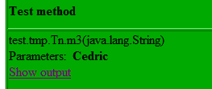
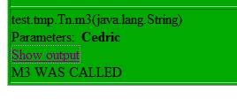
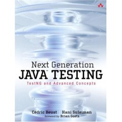

1. Welcome to TestNG
TestNG is a testing framework inspired from JUnit and NUnit but introducing some new functionalities that make it more powerful and easier to use, such as:
-
Annotations.
-
Run your tests in arbitrarily big thread pools with various policies available (all methods in their own thread, one thread per test class, etc…).
-
Test that your code is multithread safe.
-
Flexible test configuration.
-
Support for data-driven testing (with @DataProvider).
-
Support for parameters.
-
Powerful execution model (no more TestSuite).
-
Supported by a variety of tools and plug-ins (Eclipse, IDEA, Maven, etc…).
-
Embeds BeanShell for further flexibility.
-
Default JDK functions for runtime and logging (no dependencies).
-
Dependent methods for application server testing.
TestNG is designed to cover all categories of tests: unit, functional, end-to-end, integration, etc…
I started TestNG out of frustration for some JUnit deficiencies which I have documented on my weblog here and here Reading these entries might give you a better idea of the goal I am trying to achieve with TestNG. You can also check out a quick overview of the main features and an article describing a very concrete example where the combined use of several TestNG’s features provides for a very intuitive and maintainable testing design.
Here is a very simple test:
package example1;
import org.testng.annotations.*;
public class SimpleTest {
@BeforeClass
public void setUp() {
// code that will be invoked when this test is instantiated
}
@Test(groups = {"fast"})
public void aFastTest() {
System.out.println("Fast test");
}
@Test(groups = {"slow"})
public void aSlowTest() {
System.out.println("Slow test");
}
}The method setUp() will be invoked after the test class has been built and before any test method is run. In this example, we will be running the group fast, so aFastTest() will be invoked while aSlowTest() will be skipped.
Things to note:
-
No need to extend a class or implement an interface.
-
Even though the example above uses the JUnit conventions, our methods can be called any name you like, it’s the annotations that tell TestNG what they are.
-
A test method can belong to one or several groups.
Once you have compiled your test class into the build directory, you can invoke your test with the command line, an ant task (shown below) or an XML file:
<project default="test">
<path id="cp">
<pathelement location="lib/testng-testng-5.13.1.jar"/>
<pathelement location="build"/>
</path>
<taskdef name="testng" classpathref="cp"
classname="org.testng.TestNGAntTask"/>
<target name="test">
<testng classpathref="cp" groups="fast">
<classfileset dir="build" includes="example1/*.class"/>
</testng>
</target>
</project>Use ant to invoke it:
c:> ant
Buildfile: build.xml
test:
[testng] Fast test
[testng] ===============================================
[testng] Suite for Command line test
[testng] Total tests run: 1, Failures: 0, Skips: 0
[testng] ===============================================
BUILD SUCCESSFUL
Total time: 4 secondsThen you can browse the result of your tests:
start test-output\index.html (on Windows)1.1. Requirements
-
TestNG Upto v7.5: JDK 8.
-
TestNG v7.6.0 and above: JDK 11 or higher.
1.2. Mailing-lists
-
The users mailing-list can be found on Google Groups.
-
If you are interested in working on TestNG itself, join the developer mailing-list.
1.3. Locations of the projects
If you are interested in contributing to TestNG or one of the IDE plug-ins, you will find them in the following locations:
1.4. Bug reports
If you think you found a bug, here is how to report it:
-
Create a small project that will allow us to reproduce this bug. In most cases, one or two Java source files and a testng.xml file should be sufficient. Then you can either zip it and email it to the testng-dev mailing-list or make it available on an open source hosting site, such as github and email testng-dev so we know about it. Please make sure that this project is self contained so that we can build it right away (remove the dependencies on external or proprietary frameworks, etc…).
-
If the bug you observed is on the Eclipse plug-in, make sure your sample project contains the
.projectand.classpathfiles. -
File a bug.
For more information, you can either download TestNG, read the manual or browse the links at the top.
1.5. License
2. Download
2.1. Current Release Version
2.1.1. Maven
<dependency>
<groupId>org.testng</groupId>
<artifactId>testng</artifactId>
<version>7.9.0</version>
<scope>test</scope>
</dependency>2.1.2. Gradle
dependencies {
testCompile 'org.testng:testng:7.9.0'
}2.1.3. Snapshots
TestNG automatically uploads snapshots to Sonatype which you can access by adding the following repository:
repositories {
maven {
url 'https://oss.sonatype.org/content/repositories/snapshots'
}
}2.1.4. Eclipse plug-in
2.1.5. Build TestNG from source code
TestNG is also hosted on GitHub, where you can download the source and build the distribution yourself:
$ git clone https://github.com/testng-team/testng.git
$ cd testng
$ ./gradlew buildYou will then find the jar file in the testng/build/libs directory
Some useful tasks:
-
./gradlew tasks- to see what all tasks are available -
./gradlew test- to kick off the tests (incremental build) -
./gradlew clean test- if you want to have a clean build. -
./gradlew autostyleApply- Applies code formatting steps to sourcecode in-place. -
./gradlew autostyleCheck- Checks that sourcecode satisfies formatting steps. -
./gradlew check- Runs the below checks:-
"Applies code formatting steps to sourcecode in-place." and
-
"Checks that sourcecode satisfies formatting steps.".
-
2.1.6. Build the TestNG Eclipse Plugin from source code
TestNG Eclipse Plugin is hosted on GitHub, you can download the source code and build by ourselves.
3. TestNG Documentation
3.1. Introduction
TestNG is a testing framework designed to simplify a broad range of testing needs, from unit testing (testing a class in isolation of the others) to integration testing (testing entire systems made of several classes, several packages and even several external frameworks, such as application servers).
Writing a test is typically a three-step process:
-
Write the business logic of your test and insert TestNG annotations in your code.
-
Add the information about your test (e.g. the class name, the groups you wish to run, etc…) in a testng.xml file or in
build.xml.
You can find a quick example on the Welcome page.
The concepts used in this documentation are as follows:
-
A suite is represented by one XML file. It can contain one or more tests and is defined by the
<suite>tag. -
A test is represented by <test> and can contain one or more TestNG classes.
-
A TestNG class is a Java class that contains at least one TestNG annotation. It is represented by the <class> tag and can contain one or more test methods.
-
A test method is a Java method annotated by
@Testin your source.
A TestNG test can be configured by @BeforeXXX and @AfterXXX annotations which allows to perform some Java logic before and after a certain point, these points being either of the items listed above.
The rest of this manual will explain the following:
-
A list of all the annotations with a brief explanation. This will give you an idea of the various functionalities offered by TestNG but you will probably want to consult the section dedicated to each of these annotations to learn the details.
-
A description of the testng.xml file, its syntax and what you can specify in it.
-
A detailed list of the various features and how to use them with a combination of annotations and testng.xml.
3.2. Annotations
Type |
Annotations |
Description |
Annotation |
|
Configuration information for a TestNG class:
Behaviour of annotations in superclass of a TestNG class The annotations above will also be honored (inherited) when placed on a superclass of a TestNG class. This is useful for example to centralize test setup for multiple test classes in a common superclass. In that case, TestNG guarantees that the "@Before" methods are executed in inheritance order (highest superclass first, then going down the inheritance chain), and the "@After" methods in reverse order (going up the inheritance chain). |
Annotation Attributes |
|
For before methods (beforeSuite, beforeTest, beforeTestClass and beforeTestMethod, but not beforeGroups): If set to true, this configuration method will be run regardless of what groups it belongs to. For after methods (afterSuite, afterClass, …): If set to true, this configuration method will be run even if one or more methods invoked previously failed or was skipped. |
|
The list of groups this method depends on. |
|
|
The list of methods this method depends on. |
|
|
Whether methods on this class/method are enabled. |
|
|
The list of groups this class/method belongs to. |
|
|
If true, this method will belong to groups specified in the @Test annotation at the class level. |
|
|
Only for @BeforeMethod and @AfterMethod. If specified, then this setup/teardown method will only be invoked if the corresponding test method belongs to one of the listed groups. |
|
Annotation |
|
Marks a method as supplying data for a test method. The annotated method must return an |
Annotation Attributes |
|
The name of this data provider. If it’s not supplied, the name of this data provider will automatically be set to the name of the method. |
|
If set to true, tests generated using this data provider are run in parallel. Default value is false. |
|
Annotation |
|
Marks a method as a factory that returns objects that will be used by TestNG as Test classes. The method must return |
Annotation |
|
Defines listeners on a test class. |
Annotation Attributes |
|
An array of classes that extend org.testng.ITestNGListener. |
Annotation |
|
Describes how to pass parameters to a @Test method. |
Annotation Attributes |
|
The list of variables used to fill the parameters of this method. |
Annotation |
|
Marks a class or a method as part of the test. |
Annotation Attributes |
|
If set to true, this test method will always be run even if it depends on a method that failed. |
|
The name of the data provider for this test method. |
|
|
The class where to look for the data provider. If not specified, the data provider will be looked on the class of the current test method or one of its base classes. If this attribute is specified, the data provider method needs to be static on the specified class. |
|
|
The list of groups this method depends on. |
|
|
The list of methods this method depends on. |
|
|
The description for this method. |
|
|
Whether methods on this class/method are enabled. |
|
|
The list of exceptions that a test method is expected to throw. If no exception or a different than one on this list is thrown, this test will be marked a failure. |
|
|
The list of groups this class/method belongs to. |
|
|
The number of times this method should be invoked. |
|
|
The maximum number of milliseconds this test should take for the cumulated time of all the invocationcounts. This attribute will be ignored if invocationCount is not specified. |
|
|
The priority for this test method. Lower priorities will be scheduled first. |
|
|
The percentage of success expected from this method |
|
|
If set to true, all the methods on this test class are guaranteed to run in the same thread, even if the tests are currently being run with |
|
|
The maximum number of milliseconds this test should take. |
|
|
The size of the thread pool for this method. The method will be invoked from multiple threads as specified by invocationCount. NOTE: this attribute is ignored if invocationCount is not specified |
3.3. testng.xml
You can invoke TestNG in several different ways:
-
With a
testng.xmlfile -
With
ant -
From the command line
This section describes the format of testng.xml (you will find documentation on ant and the command line below).
The current DTD for testng.xml can be found on the main Web site: testng-1.0.dtd. Here is an example testng.xml file:
<!DOCTYPE suite SYSTEM "https://testng.org/testng-1.0.dtd">
<suite name="Suite1" verbose="1">
<test name="Nopackage">
<classes>
<class name="NoPackageTest"/>
</classes>
</test>
<test name="Regression1">
<classes>
<class name="test.sample.ParameterSample"/>
<class name="test.sample.ParameterTest"/>
</classes>
</test>
</suite>You can specify package names instead of class names:
<!DOCTYPE suite SYSTEM "https://testng.org/testng-1.0.dtd">
<suite name="Suite1" verbose="1">
<test name="Regression1">
<packages>
<package name="test.sample"/>
</packages>
</test>
</suite>In this example, TestNG will look at all the classes in the package test.sample and will retain only classes that have TestNG annotations.
You can also specify groups and methods to be included and excluded:
<test name="Regression1">
<groups>
<run>
<exclude name="brokenTests"/>
<include name="checkinTests"/>
</run>
</groups>
<classes>
<class name="test.IndividualMethodsTest">
<methods>
<include name="testMethod"/>
</methods>
</class>
</classes>
</test>You can also define new groups inside testng.xml and specify additional details in attributes, such as whether to run the tests in parallel, how many threads to use, whether you are running JUnit tests, etc…
By default, TestNG will run your tests in the order they are found in the XML file. If you want the classes and methods listed in this file to be run in an unpredictable order, set the preserve-order attribute to false.
<test name="Regression1" preserve-order="false">
<classes>
<class name="test.Test1">
<methods>
<include name="m1"/>
<include name="m2"/>
</methods>
</class>
<class name="test.Test2"/>
</classes>
</test>Please see the DTD for a complete list of the features, or read on.
3.4. Running TestNG
TestNG can be invoked in different ways:
-
Command line
This section only explains how to invoke TestNG from the command line. Please click on one of the links above if you are interested in one of the other ways.
Assuming that you have TestNG in your class path, the simplest way to invoke TestNG is as follows:
java org.testng.TestNG testng1.xml [testng2.xml testng3.xml ...]You need to specify at least one XML file describing the TestNG suite you are trying to run. Additionally, the following command-line switches are available:
3.4.1. Command Line Parameters
| Option | Argument | Documentation |
|---|---|---|
|
|
Whether TestNG should keep attempting |
|
A directory |
The directory where the reports will be generated (defaults to |
|
The default number of threads to use for data providers when running tests in parallel. |
This sets the default maximum number of threads to use for data providers when running tests in parallel. It will only take effect if the parallel mode has been selected (for example, with the |
|
A comma-separated list of groups. |
The list of groups you want to be excluded from this run. |
|
A comma-separated list of groups. |
The list of groups you want to run (e.g. "windows,linux,regression"). |
|
A comma-separated list of Java classes that can be found on your classpath. |
Lets you specify your own test listeners. The classes need to implement |
|
|
Whether to use the default listeners |
|
A comma separated list of fully qualified class name and method. For example |
Lets you specify individual methods to run. |
|
A comma-separated list of Java classes and method priorities that define method selectors. |
Lets you specify method selectors on the command line. For example: |
|
|
If specified, sets the default mechanism used to determine how to use parallel threads when running tests. If not set, default mechanism is not to use parallel threads at all. This can be overridden in the suite definition. |
|
The extended configuration for a custom report listener. |
Similar to the |
|
A semicolon separated list of directories. |
The directories where your javadoc annotated test sources are. This option is only necessary if you are using javadoc type annotations. (e.g. |
|
The default name to use for a test suite. |
This specifies the suite name for a test suite defined on the command line. This option is ignored if the |
|
A comma-separated list of classes that can be found in your classpath. |
A list of class files separated by commas (e.g. |
|
A jar file. |
Specifies a jar file that contains test classes. If a |
|
The default name to use for a test. |
This specifies the name for a test defined on the command line. This option is ignored if the suite.xml file or the source code specifies a different test name. It is possible to create a test name with spaces in it if you surround it with double-quotes |
|
A comma separated list of test names. |
Only tests defined in a <test> tag matching one of these names will be run. |
|
A Java classes that can be found on your classpath. |
Lets you specify your own test runners. The class needs to implement |
|
The default number of threads to use when running tests in parallel. |
This sets the default maximum number of threads to use for running tests in parallel. It will only take effect if the parallel mode has been selected (for example, with the -parallel option). This can be overridden in the suite definition. |
|
The path of the XML file inside the jar file. |
This attribute should contain the path to a valid XML file inside the test jar (e.g. |
|
|
Indicates if TestNG should use a global shared thread-pool (at suite level) for running data driven tests. TestNG will consider the value set for the configuration parameter |
|
|
Indicates if TestNG should use a global shared thread-pool (at suite level) for running regular and data driven tests. TestNG will consider the value set for the configuration parameter |
|
a valid log level |
Level of verbosity to be used when logging messages. |
|
|
Should TestNG run in JUnit mode. |
|
|
Mixed mode - autodetect the type of current test and run it with appropriate runner. |
|
A string that represents a fully qualified class name. |
Fully qualified class name that implements |
|
|
Ignore missed test names given by |
|
|
Should TestNG skip failed invocation counts for data driven tests and tests driven by invocation counts. |
|
A string that represents a fully qualified class name. |
Fully qualified class name that implements |
|
An integer value that represents the thread pool size. When not specified, defaults to |
Size of the thread pool to use to run suites. |
|
|
Whether to run suites in same order as specified in XML or not. |
|
|
Should method invocation listeners be run even for skipped methods. |
|
A string that represents a fully qualified class name. |
Fully qualified class name that implements org.testng.IInjectorFactory which can be used to handle with dependency injection. |
`-failwheneverythingskipped' |
|
Should TestNG fail execution if all tests were skipped and nothing was run. |
|
A comma separated string that represents a fully qualified class name(s). |
Comma separated fully qualified class names of listeners that should be skipped from being wired in via Service Loaders. |
|
|
Should TestNG exclude explicitly included test methods if they belong to any excluded groups as defined in the suite xml file. |
|
|
Should TestNG report all iterations of a data driven test as individual skips, in-case of upstream failures. |
|
|
Should TestNG consider failures in Data Providers as test failures. |
|
|
Should TestNG generate results on a per suite basis by creating a sub directory for each suite and dumping results into it. |
|
|
Should TestNG use a global Shared ThreadPool (At suite level) for running data providers. |
|
|
Should TestNG use a global Shared ThreadPool (At suite level) for running regular and data driven tests. |
This documentation can be obtained by invoking TestNG without any arguments.
You can also put the command line switches in a text file, say c:\command.txt, and tell TestNG to use that file to retrieve its parameters:
C:> more c:\command.txt
-d test-output testng.xml
C:> java org.testng.TestNG @c:\command.txtAdditionally, TestNG can be passed properties on the command line of the Java Virtual Machine, for example
java -Dtestng.test.classpath="c:/build;c:/java/classes;" org.testng.TestNG testng.xmlHere are the properties that TestNG understands:
3.4.2. System properties
| Property | Type | Documentation |
|---|---|---|
|
A semicolon separated series of directories that contain your test classes. |
If this property is set, TestNG will use it to look for your test classes instead of the class path. This is convenient if you are using the package tag in your XML file and you have a lot of classes in your classpath, most of them not being test classes. |
Example:
java org.testng.TestNG -groups windows,linux -testclass org.test.MyTestThe ant task and testng.xml allow you to launch TestNG with more parameters (methods to include, specifying parameters, etc…), so you should consider using the command line only when you are trying to learn about TestNG and you want to get up and running quickly.
The command line flags that specify what tests should be run will be ignored if you also specify a testng.xml file, with the exception of -groups and -excludegroups, which will override all the group inclusions/exclusions found in testng.xml.
|
3.4.3. Running tests from within a test jar
TestNG can be provided with a jar that contains your test classes and you can execute the tests from within it.
Let’s see an example (We are going to use Maven for this example.)
We will be using maven-assembly-plugin and maven-jar-plugin to demonstrate how to do this.
The project’s directory structure will look like below:
.
├── pom.xml
└── src
└── test
├── java
│ └── org
│ └── testng
│ ├── FirstTestCase.java
│ └── SecondTestCase.java
└── resources
├── suites
│ ├── suite1.xml
│ └── suite2.xml
└── test-jar-with-dependencies.xmlThe relevant <dependencies> section and the <plugins> section will look like below:
<dependencies>
<dependency>
<groupId>org.testng</groupId>
<artifactId>testng</artifactId>
<version>7.9.0</version>
<scope>test</scope>
</dependency>
</dependencies>
<build>
<plugins>
<plugin>
<groupId>org.apache.maven.plugins</groupId>
<artifactId>maven-jar-plugin</artifactId>
<version>3.3.0</version>
<executions>
<execution>
<goals>
<goal>test-jar</goal>
</goals>
</execution>
</executions>
</plugin>
<plugin>
<groupId>org.apache.maven.plugins</groupId>
<artifactId>maven-assembly-plugin</artifactId>
<version>3.6.0</version>
<configuration>
<descriptors>
<descriptor>src/test/resources/test-jar-with-dependencies.xml</descriptor>
</descriptors>
<archive>
<!-- We would like to create an executable jar so that we can execute it directly -->
<manifest>
<mainClass>org.testng.TestNG</mainClass>
</manifest>
</archive>
</configuration>
<executions>
<execution>
<phase>package</phase>
<goals>
<goal>single</goal>
</goals>
</execution>
</executions>
</plugin>
</plugins>
</build>The contents of src/test/resources/test-jar-with-dependencies.xml will look like below:
<assembly xmlns="http://maven.apache.org/plugins/maven-assembly-plugin/assembly/1.1.0"
xmlns:xsi="http://www.w3.org/2001/XMLSchema-instance"
xsi:schemaLocation="http://maven.apache.org/plugins/maven-assembly-plugin/assembly/1.1.0 http://maven.apache.org/xsd/assembly-1.1.0.xsd
https://maven.apache.org/plugins/maven-assembly-plugin/assembly/1.1.0 ">
<id>test-jar-with-dependencies</id>
<formats>
<format>jar</format>
</formats>
<includeBaseDirectory>false</includeBaseDirectory>
<dependencySets>
<dependencySet>
<outputDirectory>/</outputDirectory>
<useProjectArtifact>true</useProjectArtifact>
<useProjectAttachments>true</useProjectAttachments>
<unpack>true</unpack>
<scope>test</scope>
</dependencySet>
</dependencySets>
</assembly>Now let’s build the jars using the command mvn clean package.
Now in order to run the tests, use the below command:
java -jar target/uber-testjar-demo-1.0-SNAPSHOT-test-jar-with-dependencies.jar -testjar target/uber-testjar-demo-1.0-SNAPSHOT-tests.jarThis command causes TestNG to look for test classes in the jar and it executes all of them.
Here:
-
target/uber-testjar-demo-1.0-SNAPSHOT-test-jar-with-dependencies.jar- Represents the uber/fat jar which contains all the dependencies inside it. -
target/uber-testjar-demo-1.0-SNAPSHOT-tests.jar- Contains all the tests that we created. -
-
-testjar- This argument informs TestNG that it should look for test classes inside the jar and NOT in the current CLASSPATH.
If you would like to execute a specific suite file that exists in the jar, then use the below command:
java -jar target/uber-testjar-demo-1.0-SNAPSHOT-test-jar-with-dependencies.jar -testjar target/uber-testjar-demo-1.0-SNAPSHOT-tests.jar -xmlpathinjar suites/suite2.xmlHere we are specifying the path to the suite file using the command line argument -xmlpathinjar.
For more details, refer to this stackoverflow post.
3.5. Test methods, Test classes and Test groups
3.5.1. Test methods
Test methods are annotated with @Test. Methods annotated with @Test that happen to return a value will be ignored, unless you set allow-return-values to true in your testng.xml:
<suite allow-return-values="true">
<!-- rest of the contents ignored for brevity -->
</suite>or
<test allow-return-values="true">
<!-- rest of the contents ignored for brevity -->
</test>3.5.2. Test groups
TestNG allows you to perform sophisticated groupings of test methods. Not only can you declare that methods belong to groups, but you can also specify groups that contain other groups. Then TestNG can be invoked and asked to include a certain set of groups (or regular expressions) while excluding another set. This gives you maximum flexibility in how you partition your tests and doesn't require you to recompile anything if you want to run two different sets of tests back to back.
Groups are specified in your testng.xml file and can be found either under the <test> or <suite> tag. Groups specified in the <suite> tag apply to all the <test> tags underneath. Note that groups are accumulative in these tags: if you specify group "a" in <suite> and "b" in <test>, then both "a" and "b" will be included.
For example, it is quite common to have at least two categories of tests:
-
Check-in tests. These tests should be run before you submit new code. They should typically be fast and just make sure no basic functionality was broken.
-
Functional tests. These tests should cover all the functionalities of your software and be run at least once a day, although ideally you would want to run them continuously.
Typically, check-in tests are a subset of functional tests. TestNG allows you to specify this in a very intuitive way with test groups. For example, you could structure your test by saying that your entire test class belongs to the "functest" group, and additionally that a couple of methods belong to the group "checkintest":
public class Test1 {
@Test(groups = { "functest", "checkintest" })
public void testMethod1() {
}
@Test(groups = {"functest", "checkintest"} )
public void testMethod2() {
}
@Test(groups = { "functest" })
public void testMethod3() {
}
}Invoking TestNG with
<test name="Test1">
<groups>
<run>
<include name="functest"/>
</run>
</groups>
<classes>
<class name="example1.Test1"/>
</classes>
</test>will run all the test methods in that classes, while invoking it with checkintest will only run testMethod1() and testMethod2().
Here is another example, using regular expressions this time. Assume that some of your test methods should not be run on Linux, your test would look like:
@Test
public class Test1 {
@Test(groups = { "windows.checkintest" })
public void testWindowsOnly() {
}
@Test(groups = {"linux.checkintest"} )
public void testLinuxOnly() {
}
@Test(groups = { "windows.functest" } )
public void testWindowsToo() {
}
}You could use the following testng.xml to launch only the Windows methods:
<test name="Test1">
<groups>
<run>
<include name="windows.*"/>
</run>
</groups>
<classes>
<class name="example1.Test1"/>
</classes>
</test>
Note: TestNG uses regular expressions, and not wildmats. Be aware of the difference (for example, "anything" is matched by "." — dot star — and not "").
|
Method groups
You can also exclude or include individual methods:
<test name="Test1">
<classes>
<class name="example1.Test1">
<methods>
<include name=".*enabledTestMethod.*"/>
<exclude name=".*brokenTestMethod.*"/>
</methods>
</class>
</classes>
</test>This can come in handy to deactivate a single method without having to recompile anything, but I don’t recommend using this technique too much since it makes your testing framework likely to break if you start refactoring your Java code (the regular expressions used in the tags might not match your methods anymore).
3.5.3. Groups of groups
Groups can also include other groups. These groups are called "MetaGroups". For example, you might want to define a group "all" that includes "checkintest" and "functest". "functest" itself will contain the groups "windows" and "linux" while "checkintest will only contain "windows". Here is how you would define this in your property file:
<test name="Regression1">
<groups>
<define name="functest">
<include name="windows"/>
<include name="linux"/>
</define>
<define name="all">
<include name="functest"/>
<include name="checkintest"/>
</define>
<run>
<include name="all"/>
</run>
</groups>
<classes>
<class name="test.sample.Test1"/>
</classes>
</test>3.5.4. Exclusion groups
TestNG allows you to include groups as well as exclude them. For example, it is quite usual to have tests that temporarily break because of a recent change, and you don’t have time to fix the breakage yet. 4 However, you do want to have clean runs of your functional tests, so you need to deactivate these tests but keep in mind they will need to be reactivated.
A simple way to solve this problem is to create a group called "broken" and make these test methods belong to it. For example, in the above example, I know that testMethod2() is now broken so I want to disable it:
@Test(groups = {"checkintest", "broken"} )
public void testMethod2() {
}All I need to do now is to exclude this group from the run:
<test name="Simple example">
<groups>
<run>
<include name="checkintest"/>
<exclude name="broken"/>
</run>
</groups>
<classes>
<class name="example1.Test1"/>
</classes>
</test>This way, I will get a clean test run while keeping track of what tests are broken and need to be fixed later.
you can also disable tests on an individual basis by using the "enabled" property available on both @Test and @Before/@After annotations.
|
3.5.5. Partial groups
You can define groups at the class level and then add groups at the method level:
@Test(groups = { "checkin-test" })
public class All {
@Test(groups = { "func-test" })
public void method1() {
//test code goes here
}
public void method2() {
//more code goes here
}
}In this class, method2() is part of the group "checkin-test", which is defined at the class level, while method1() belongs to both "checkin-test" and "func-test".
3.6. Parameters
TestNG allows you to pass an arbitrary number of parameters to each of your tests using the `@Parameters` annotation.
There are three ways to set these parameters
-
The testng.xml file
-
Programmatically
-
Java system properties
3.6.1. Parameters from testng.xml
If you are using simple values for your parameters, you can specify them in your testng.xml:
@Parameters({ "first-name" })
@Test
public void testSingleString(String firstName) {
System.out.println("Invoked testString " + firstName);
assert "Cedric".equals(firstName);
}In this code, we specify that the parameter firstName of your Java method should receive the value of the XML parameter called first-name. This XML parameter is defined in testng.xml:
<suite name="My suite">
<parameter name="first-name" value="Cedric"/>
<test name="Simple example">
<!-- ... -->
</test>
</suite>The same technique can be used for @Before/@After and @Factory annotations:
@Parameters({ "datasource", "jdbc-driver" })
@BeforeMethod
public void beforeTest(String ds, String driver) {
m_dataSource = buildDataSource(); // look up the value of datasource
m_jdbcDriver = driver;
}This time, the two Java parameter ds and driver will receive the value given to the properties datasource and jdbc-driver respectively.
Parameters can be declared optional with the org.testng.annotations.Optional annotation:
@Parameters("db")
@Test
public void testNonExistentParameter(@Optional("mysql") String db) {
//more code
}If no parameter named "db" is found in your testng.xml file, your test method will receive the default value specified inside the @Optional annotation: "mysql".
The @Parameters annotation can be placed at the following locations:
-
On any method that already has a
@Test,@Before/@Afteror@Factoryannotation. -
On at most one constructor of your test class. In this case, TestNG will invoke this particular constructor with the parameters initialized to the values specified in
testng.xmlwhenever it needs to instantiate your test class. This feature can be used to initialize fields inside your classes to values that will then be used by your test methods.
Important:
-
The XML parameters are mapped to the Java parameters in the same order as they are found in the annotation, and TestNG will issue an error if the numbers don’t match.
-
Parameters are scoped. In testng.xml, you can declare them either under:
-
<suite>tag or -
<test>tag or -
<class>tag or -
<methods>tag.
-
-
The order of precedence (lowest to highest) in terms of resolving values for parameters with same names is
<suite> --> <test> --> <class> --> <methods>-
If two parameters have the same name, it’s the one defined in
<methods>that has precedence. This is convenient if you need to specify a parameter applicable to all your tests and override its value only for certain test method.
3.6.2. Parameters with DataProviders
Specifying parameters in testng.xml might not be sufficient if you need to pass complex parameters, or parameters that need to be created from Java (complex objects, objects read from a property file or a database, etc…). In this case, you can use a Data Provider to supply the values you need to test. A Data Provider is a method on your class that returns an array of array of objects. This method is annotated with @DataProvider:
//This method will provide data to any test method that declares that its Data Provider
//is named "test1"
@DataProvider(name = "test1")
public Object[][] createData1() {
return new Object[][] {
{ "Cedric", 36 },
{ "Anne", 37},
};
}
//This test method declares that its data should be supplied by the Data Provider
//named "test1"
@Test(dataProvider = "test1")
public void verifyData1(String n1, Integer n2) {
System.out.println(n1 + " " + n2);
}will print
Cedric 36
Anne 37A @Test method specifies its Data Provider with the dataProvider attribute. This name must correspond to a method on the same class annotated with @DataProvider(name="…") with a matching name.
By default, the data provider will be looked for in the current test class or one of its base classes. If you want to put your data provider in a different class, it needs to be a static method or a class with a non-arg constructor, and you specify the class where it can be found in the dataProviderClass attribute:
public class StaticProvider {
@DataProvider(name = "create")
public static Object[][] createData() {
return new Object[][] {
new Object[] { 42 }
};
}
}
public class MyTest {
@Test(dataProvider = "create", dataProviderClass = StaticProvider.class)
public void test(Integer n) {
// ...
}
}The data provider supports injection too. TestNG will use the test context for the injection. The Data Provider method can return one of the following types:
-
An array of array of objects (
Object[][]) where the first dimension’s size is the number of times the test method will be invoked and the second dimension size contains an array of objects that must be compatible with the parameter types of the test method. This is the case illustrated by the example above. -
An
Iterator<Object[]>. The only difference withObject[][]is that anIteratorlets you create your test data lazily. TestNG will invoke the iterator and then the test method with the parameters returned by this iterator one by one. This is particularly useful if you have a lot of parameter sets to pass to the method and you don’t want to create all of them upfront.-
An array of objects (
Object[]). This is similar toIterator<Object[]>but causes the test method to be invoked once for each element of the source array. -
An
Iterator<Object>>. Lazy alternative ofObject[]. Causes the test method to be invoked once for each element of the iterator.
-
It must be said that return type is not limited to Object only thus MyCustomData[][] or Iterator<Supplier> are also possible. The only limitation is that in case of iterator its parameter type can’t be explicitly parameterized itself. Here is an example of this feature:
@DataProvider(name = "test1")
public Iterator<Object[]> createData() {
return new MyIterator(DATA);
}Using MyCustomData[] as a return type
@DataProvider(name = "test1")
public MyCustomData[] createData() {
return new MyCustomData[]{ new MyCustomData() };
}Or its lazy option with Iterator<MyCustomData>
@DataProvider(name = "test1")
public Iterator<MyCustomData> createData() {
return Arrays.asList(new MyCustomData()).iterator();
}Parameter type (Stream) of Iterator can’t be explicitly parametrized
@DataProvider(name = "test1")
public Iterator<Stream> createData() {
return Arrays.asList(Stream.of("a", "b", "c")).iterator();
}If you declare your @DataProvider as taking a java.lang.reflect.Method as first parameter, TestNG will pass the current test method for this first parameter. This is particularly useful when several test methods use the same @DataProvider and you want it to return different values depending on which test method it is supplying data for.
For example, the following code prints the name of the test method inside its @DataProvider:
@DataProvider(name = "dp")
public Object[][] createData(Method m) {
System.out.println(m.getName()); // print test method name
return new Object[][] { new Object[] { "Cedric" }};
}
@Test(dataProvider = "dp")
public void test1(String s) {
}
@Test(dataProvider = "dp")
public void test2(String s) {
}and will therefore display:
test1
test2Data providers can run in parallel with the attribute parallel:
@DataProvider(parallel = true)
public Object[][] getTestData() {
// ...
}Each of the parallel data providers running from an XML file runs with a thread pool which has a size of 10 by default. You can modify this value in the <suite> tag of your XML file:
<suite name="Suite1" data-provider-thread-count="20" >
<!-- content ignored for brevity -->
</suite>If you want to run a few specific data providers in a different thread pool, you need to run them from a different XML file.
3.6.3. Retries and data providers
TestNG allows you to retry a data provider incase it has encountered any issues when calling it the first time.
This is similar to how regular test methods can be retried as explained in this section.
To be able to retry a data provider, the following needs to be done.
-
First we would need to implement the interface
org.testng.IRetryDataProvider. -
Next you would need to tie this implementation to the data provider annotation using the attribute
retryUsingof the@DataProviderannotation. -
With that we can now retry a failed data provider.
Here’s a sample retry implementation:
import org.testng.IDataProviderMethod;
import org.testng.IRetryDataProvider;
import java.util.concurrent.atomic.AtomicInteger;
public class RetryDataProvider implements IRetryDataProvider {
private final AtomicInteger counter = new AtomicInteger(1);
@Override
public boolean retry(IDataProviderMethod dataProvider) {
boolean status = counter.getAndIncrement() <= 2;
String clazz = dataProvider.getMethod().getDeclaringClass().getName();
String dataProviderMethodName = dataProvider.getMethod().getName();
String methodName = clazz + "." + dataProviderMethodName + "()";
System.err.println("Retry the data provider method " + methodName + " ? " + status);
return status;
}
}Here’s how a test class that consumes this retry mechanism can look like:
import org.testng.annotations.DataProvider;
import org.testng.annotations.Test;
public class RetriableDataProviderSample {
private boolean throwException = true;
@Test(dataProvider = "test-data")
public void sampleTestMethod(int input) {
System.err.println("Input value = " + input);
}
@DataProvider(retryUsing = RetryDataProvider.class, name = "test-data")
public Object[][] testDataSupplier() {
if (throwException) {
throwException = false;
System.err.println("Simulating a problem when invoking the data provider");
throw new IllegalStateException("Simulating a failure in data provider");
}
return new Object[][]{
{1}, {2}
};
}
}And when you run this sample, the output would look something like below:
SLF4J: Failed to load class "org.slf4j.impl.StaticLoggerBinder".
SLF4J: Defaulting to no-operation (NOP) logger implementation
SLF4J: See http://www.slf4j.org/codes.html#StaticLoggerBinder for further details.
Simulating a problem when invoking the data provider
Retry the data provider method org.testng.demo.RetriableDataProviderSample.testDataSupplier() ? true
Input value = 1
Input value = 2
===============================================
Default Suite
Total tests run: 2, Passes: 2, Failures: 0, Skips: 0
===============================================3.6.4. Controlling ThreadPool Usage
Starting from TestNG 7.9.0, there are some additional ways in which the thread-pools that run the parallel tests can be controlled. For these new features to be consumed, update your suite file to use the testng-1.1.dtd (as seen below) so that your IDE can provide you with autocompletion:
<!DOCTYPE suite SYSTEM "https://testng.org/testng-1.1.dtd" >
<suite name="sample">
<!-- content ignored for brevity -->
</suite>-
share-thread-pool-for-data-providers- When this attribute is set to true at the suite level, TestNG will start using a shared thread pool for all the data driven tests in a given<suite>. The size of the thread pool is determined using the attributedata-provider-thread-count. This attribute has a default value offalse. -
use-global-thread-pool- When this attribute is set to true at the suite level, TestNG will start using a common thread pool for running both your regular test methods and data driven test methods. The size of the thread pool is determined using the attribute thread-count. This attribute has a default value offalse.
3.6.5. Parameters from System Properties
TestNG can be passed parameters on the command line of the Java Virtual Machine using system properties (-D). Parameters passed in this way are not required to be pre-defined in testng.xml, but will override any parameters defined there.
java -Dfirst-name=Cedrick -Dlast-name="von Braun" org.testng.TestNG testng.xmlThe Java system property variable is a string with no spaces that represents the name of the property. The value variable is a string that represents the value of the property. If the value is a string with spaces, then enclose it in quotation marks.
| In TestNG 6.x parameters defined in testng.xml could not be overwritten by system properties |
Parameters in reports
Parameters used to invoke your test methods are shown in the HTML reports generated by TestNG. Here is an example:

3.7. Dependencies
Sometimes, you need your test methods to be invoked in a certain order. Here are a few examples:
-
To make sure a certain number of test methods have completed and succeeded before running more test methods.
-
To initialize your tests while wanting this initialization methods to be test methods as well (methods tagged with
@Before/@Afterwill not be part of the final report).
TestNG allows you to specify dependencies either with annotations or in XML.
3.7.1. Dependencies with annotations
You can use the attributes dependsOnMethods or dependsOnGroups, found on the @Test annotation.
There are two kinds of dependencies:
-
Hard dependencies. All the methods you depend on must have run and succeeded for you to run. If at least one failure occurred in your dependencies, you will not be invoked and marked as a SKIP in the report.
-
Soft dependencies. You will always be run after the methods you depend on, even if some of them have failed. This is useful when you just want to make sure that your test methods are run in a certain order but their success doesn’t really depend on the success of others. A soft dependency is obtained by adding
"alwaysRun=true"in your@Testannotation.
Here is an example of a hard dependency:
@Test
public void serverStartedOk() {}
@Test(dependsOnMethods = { "serverStartedOk" })
public void method1() {}In this example, method1() is declared as depending on method serverStartedOk(), which guarantees that serverStartedOk() will always be invoked first.
You can also have methods that depend on entire groups:
@Test(groups = { "init" })
public void serverStartedOk() {}
@Test(groups = { "init" })
public void initEnvironment() {}
@Test(dependsOnGroups = { "init.*" })
public void method1() {}In this example, method1() is declared as depending on any group matching the regular expression "init.*", which guarantees that the methods serverStartedOk() and initEnvironment() will always be invoked before method1().
| as stated before, the order of invocation for methods that belong in the same group is not guaranteed to be the same across test runs. |
If a method depended upon fails and you have a hard dependency on it (alwaysRun=false, which is the default), the methods that depend on it are not marked as FAIL but as SKIP. Skipped methods will be reported as such in the final report (in a color that is neither red nor green in HTML), which is important since skipped methods are not necessarily failures.
Both dependsOnGroups and dependsOnMethods accept regular expressions as parameters. For dependsOnMethods, if you are depending on a method which happens to have several overloaded versions, all the overloaded methods will be invoked. If you only want to invoke one of the overloaded methods, you should use dependsOnGroups.
For a more advanced example of dependent methods, please refer to this article, which uses inheritance to provide an elegant solution to the problem of multiple dependencies.
By default, dependent methods are grouped by class.
For example, if method b() depends on method a() and you have several instances of the class that contains these methods (because of a factory of a data provider), then the invocation order will be as follows:
a(1)
a(2)
b(2)
b(2)TestNG will not run b() until all the instances have invoked their a() method.
This behavior might not be desirable in certain scenarios, such as for example testing a sign in and sign out of a web browser for various countries. In such a case, you would like the following ordering:
signIn("us")
signOut("us")
signIn("uk")
signOut("uk")For this ordering, you can use the XML attribute group-by-instances. This attribute is valid either on <suite> or <test>:
<suite name="Factory" group-by-instances="true">
<!-- rest of the contents ignored for brevity -->
</suite>or
<test name="Factory" group-by-instances="true">
<!-- rest of the contents ignored for brevity -->
</test>3.7.2. Dependencies in XML
Alternatively, you can specify your group dependencies in the testng.xml file. You use the <dependencies> tag to achieve this:
<test name="My suite">
<groups>
<dependencies>
<group name="c" depends-on="a b" />
<group name="z" depends-on="c" />
</dependencies>
</groups>
</test>The <depends-on> attribute contains a space-separated list of groups.
3.8. Factories
Factories allow you to create tests dynamically. For example, imagine you want to create a test method that will access a page on a website several times, and you want to invoke it with different values:
public class TestWebServer {
@Test(parameters = { "number-of-times" })
public void accessPage(int numberOfTimes) {
while (numberOfTimes-- > 0) {
// access the web page
}
}
}<test name="T1">
<parameter name="number-of-times" value="10"/>
<classes>
<class name= "TestWebServer" />
</classes>
</test>
<test name="T2">
<parameter name="number-of-times" value="20"/>
<classes>
<class name= "TestWebServer"/>
</classes>
</test>
<test name="T3">
<parameter name="number-of-times" value="30"/>
<classes>
<class name= "TestWebServer"/>
</classes>
</test>This can become quickly impossible to manage, so instead, you should use a factory:
public class WebTestFactory {
@Factory
public Object[] createInstances() {
Object[] result = new Object[10];
for (int i = 0; i < 10; i++) {
result[i] = new WebTest(i * 10);
}
return result;
}
}and the new test class is now:
public class WebTest {
private int m_numberOfTimes;
public WebTest(int numberOfTimes) {
m_numberOfTimes = numberOfTimes;
}
@Test
public void testServer() {
for (int i = 0; i < m_numberOfTimes; i++) {
// access the web page
}
}
}Your testng.xml only needs to reference the class that contains the factory method, since the test instances themselves will be created at runtime:
<class name="WebTestFactory" />Or, if building a test suite instance programmatically, you can add the factory in the same manner as for tests:
TestNG testNG = new TestNG();
testNG.setTestClasses(WebTestFactory.class);
testNG.run();The factory method can receive parameters just like @Test and @Before/@After and it must return Object[]. The objects returned can be of any class (not necessarily the same class as the factory class) and they don’t even need to contain TestNG annotations (in which case they will be ignored by TestNG).
Factories can also be used with data providers, and you can leverage this functionality by putting the @Factory annotation either on a regular method or on a constructor. Here is an example of a constructor factory:
@Factory(dataProvider = "dp")
public FactoryDataProviderSampleTest(int n) {
super(n);
}
@DataProvider
static public Object[][] dp() {
return new Object[][] {
new Object[] { 41 },
new Object[] { 42 },
};
}The example will make TestNG create two test classes, on with the constructor invoked with the value 41 and the other with 42.
Optionally, you can specify indices for the data provider when using it with @Factory annotation.
When indices are specified, only the elements at the specified indices are passed as parameters for the factory annotated constructor.
@Factory(dataProvider = "dp", indices = {1, 3})
public ExampleTestCase(String text) {
this.i = i;
}
@DataProvider(name = "dp")
public static Object[] getData() {
return new Object[]{
"Java", "Kotlin", "Golang", "Rust"
};
}In the above example, the values Kotlin (2nd element) and Rust (4th element) are passed as parameters to the @Factory annotated constructor and totally 2 ExampleTestCase instances are created.
3.9. Class level annotations
The @Test annotation can be put on a class instead of a test method:
@Test
public class Test1 {
public void test1() {
}
public void test2() {
}
}The effect of a class level @Test annotation is to make all the public methods of this class to become test methods even if they are not annotated. You can still repeat the @Test annotation on a method if you want to add certain attributes.
For example:
@Test
public class Test1 {
public void test1() {
}
@Test(groups = "g1")
public void test2() {
}
}will make both test1() and test2() test methods but on top of that, test2() now belongs to the group "g1".
3.10. Ignoring tests
TestNG lets you ignore all the @Test methods :
-
In a class (or)
-
In a particular package (or)
-
In a package and all of its child packages
using the new annotation @Ignore.
When used at the method level @Ignore annotation is functionally equivalent to @Test(enabled=false).
Here’s a sample that shows how to ignore all tests within a class.
import org.testng.annotations.Ignore;
import org.testng.annotations.Test;
@Ignore
public class TestcaseSample {
@Test
public void testMethod1() {
}
@Test
public void testMethod2() {
}
}The @Ignore annotation has a higher priority than individual @Test method annotations. When @Ignore is placed on a class, all the tests in that class will be disabled.
To ignore all tests in a particular package, you just need to create package-info.java and add the @Ignore annotation to it. Here’s a sample :
@Ignore
package com.testng.master;
import org.testng.annotations.Ignore;This causes all the @Test methods to be ignored in the package com.testng.master and all of its sub-packages.
3.11. Parallelism and time-outs
You can instruct TestNG to run your tests in separate threads in various ways.
3.11.1. Parallel suites
This is useful if you are running several suite files (e.g. java org.testng.TestNG testng1.xml testng2.xml) and you want each of these suites to be run in a separate thread. You can use the following command line flag to specify the size of a thread pool:
java org.testng.TestNG -suitethreadpoolsize 3 testng1.xml testng2.xml testng3.xmlThe corresponding ant task name is suitethreadpoolsize.
3.11.2. Parallel tests, classes and methods
The parallel attribute on the <suite> tag can take one of following values:
<suite name="My suite" parallel="methods" thread-count="5">
<!-- contents omitted for brevity -->
</suite><suite name="My suite" parallel="tests" thread-count="5">
<!-- contents omitted for brevity -->
</suite><suite name="My suite" parallel="classes" thread-count="5">
<!-- contents omitted for brevity -->
</suite><suite name="My suite" parallel="instances" thread-count="5">
<!-- contents omitted for brevity -->
</suite>-
parallel="methods": TestNG will run all your test methods in separate threads. Dependent methods will also run in separate threads but they will respect the order that you specified. -
parallel="tests": TestNG will run all the methods in the same<test>tag in the same thread, but each<test>tag will be in a separate thread. This allows you to group all your classes that are not thread safe in the same<test>and guarantee they will all run in the same thread while taking advantage of TestNG using as many threads as possible to run your tests. -
parallel="classes": TestNG will run all the methods in the same class in the same thread, but each class will be run in a separate thread. -
parallel="instances": TestNG will run all the methods in the same instance in the same thread, but two methods on two different instances will be running in different threads.Additionally, the attribute `thread-count` allows you to specify how many threads should be allocated for this execution.
the @Test attribute timeOut works in both parallel and non-parallel mode.
|
You can also specify that a @Test method should be invoked from different threads. You can use the attribute threadPoolSize to achieve this result:
@Test(threadPoolSize = 3, invocationCount = 10, timeOut = 10000)
public void testServer() {
}In this example, the function testServer() will be invoked ten times from three different threads. Additionally, a time-out of ten seconds guarantees that none of the threads will block on this thread forever.
3.12. Rerunning failed tests
Every time tests fail in a suite, TestNG creates a file called testng-failed.xml in the output directory.This XML file contains the necessary information to rerun only these methods that failed, allowing you to quickly reproduce the failures without having to run the entirety of your tests.Therefore, a typical session would look like this:
java -classpath testng.jar;%CLASSPATH% org.testng.TestNG -d test-outputs testng.xml
java -classpath testng.jar;%CLASSPATH% org.testng.TestNG -d test-outputs test-outputs\testng-failed.xmlNote that testng-failed.xml will contain all the necessary dependent methods so that you are guaranteed to run the methods that failed without any SKIP failures.
Sometimes, you might want TestNG to automatically retry a test whenever it fails. In those situations, you can use a retry analyzer.
When you bind a retry analyzer to a test, TestNG automatically invokes the retry analyzer to determine if TestNG can retry a test case again in an attempt to see if the test that just fails now passes. Here is how you use a retry analyzer:
-
Build an implementation of the interface
org.testng.IRetryAnalyzer -
Bind this implementation to the
@Testannotation for e.g.,@Test(retryAnalyzer = LocalRetry.class)
Following is a sample implementation of the retry analyzer that retries a test for a maximum of three times.
import org.testng.IRetryAnalyzer;
import org.testng.ITestResult;
public class MyRetry implements IRetryAnalyzer {
private int retryCount = 0;
private static final int maxRetryCount = 3;
@Override
public boolean retry(ITestResult result) {
if (retryCount < maxRetryCount) {
retryCount++;
return true;
}
return false;
}
}import org.testng.Assert;
import org.testng.annotations.Test;
public class TestclassSample {
@Test(retryAnalyzer = MyRetry.class)
public void test2() {
Assert.fail();
}
}3.13. JUnit tests
TestNG can run JUnit 3 and JUnit 4 tests. All you need to do is put the JUnit jar file on the classpath, specify your JUnit test classes in the testng.classNames property and set the testng.junit property to true:
<test name="Test1" junit="true">
<classes>
<!-- ... -->
</classes>
</test>The behavior of TestNG in this case is similar to JUnit depending on the JUnit version found on the class path:
-
JUnit 3:
-
All methods starting with test* in your classes will be run
-
If there is a method
setUp()on your test class, it will be invoked before every test method -
If there is a method
tearDown()on your test class, it will be invoked before after every test method -
If your test class contains a method
suite(), all the tests returned by this method will be invoked
-
-
JUnit 4:
-
TestNG will use the
org.junit.runner.JUnitCorerunner to run your tests
-
3.14. BeanShell and advanced group selection
If the <include> and <exclude> tags in testng.xml are not enough for your needs, you can use a BeanShell expression to decide whether a certain test method should be included in a test run or not. You specify this expression just under the <test> tag:
<test name="BeanShell test">
<method-selectors>
<method-selector>
<script language="beanshell">
<![CDATA[
groups.containsKey("test1")
]]>
</script>
</method-selector>
</method-selectors>
<!-- ... -->
</test>When a <script> tag is found in testng.xml, TestNG will ignore subsequent <include> and <exclude> of groups and methods in the current <test> tag: your BeanShell expression will be the only way to decide whether a test method is included or not.
Here are additional information on the BeanShell script:
-
It must return a boolean value. Except for this constraint, any valid BeanShell code is allowed (for example, you might want to return
trueduring week days andfalseduring weekends, which would allow you to run tests differently depending on the date). -
TestNG defines the following variables for your convenience:
-
java.lang.reflect.Method method: the current test method. -
org.testng.ITestNGMethod testngMethod: the description of the current test method. -
java.util.Map<String, String> groups: a map of the groups the current test method belongs to.
-
-
You might want to surround your expression with a CDATA declaration (as shown above) to avoid tedious quoting of reserved XML characters).
Starting from version 7.5 TestNG does not bring in any dependency on BeanShell implementations by default.
So in order to leverage BeanShell based method selectors, please remember to add an explicit dependency on BeanShell.
For example org.apache-extras.beanshell
|
3.14.1. Annotation Transformers
TestNG allows you to modify the content of all the annotations at runtime.
This is especially useful if the annotations in the source code are right most of the time, but there are a few situations where you’d like to override their value.
In order to achieve this, you can build a class that implements IAnnotationTransformer
This is a special TestNG listener. It can be added into TestNG via the following mechanisms.
3.14.2. Via xml suite file
You can use the <listeners> tag to specify an implementation of IAnnotationTransformer in your suite xml file.
3.14.3. Via command line arguments
You can use the command line argument -listener to specify the fully qualified class name of the implementation of
IAnnotationTransformer as shown below.
java org.testng.TestNG -listener MyTransformer testng.xml3.14.4. Via your code
An implementation of IAnnotationTransformer can be wired in via your code as well (In case you are working with using the TestNG APIs for programmatically running your tests.)
TestNG tng = new TestNG();
tng.addListener(new MyTransformer());
// ...
Please don’t use the @Listeners annotation to wire-in an implementation of org.testng.IAnnotationTransformer.
Doing so will cause your implementation to be ignored. This is because TestNG needs to be able to parse all annotations
before starting to execute them and @Listeners is also one such annotation.
|
The annotation transformer allows you to alter the below types of annotations at runtime:
-
@Testannotation on test methods. -
Any of the common attributes associated with the below listed configuration annotations:
-
@BeforeSuite -
@AfterSuite -
@BeforeTest -
@AfterTest -
@BeforeClass -
@AfterClass -
@BeforeMethod -
@AfterMethod
-
-
@Listenersannotation on test classes. -
@Factoryannotation used to mark constructors or a factory method as test factories. -
@DataProviderannotated data providers.
When the method transform() is invoked, you can call any of the setters on the ITestAnnotation test parameter to alter its value before TestNG proceeds further.
For example, here is how you would override the attribute invocationCount but only on the test method invoke() of one of your test classes:
public class MyTransformer implements IAnnotationTransformer {
public void transform(ITestAnnotation annotation, Class testClass, Constructor testConstructor, Method testMethod) {
if ("invoke".equals(testMethod.getName())) {
annotation.setInvocationCount(5);
}
}
}3.15. Method Interceptors
Once TestNG has calculated in what order the test methods will be invoked, these methods are split in two groups:
-
Methods run sequentially. These are all the test methods that have dependencies or dependents. These methods will be run in a specific order.
-
Methods run in no particular order. These are all the methods that don’t belong in the first category. The order in which these test methods are run is random and can vary from one run to the next (although by default, TestNG will try to group test methods by class).
In order to give you more control on the methods that belong to the second category, TestNG provides org.testng.IMethodInterceptor
The list of methods passed in parameters are all the methods that can be run in any order. Your intercept method is expected to return a similar list of IMethodInstance, which can be either of the following:
-
The same list you received in parameter but in a different order.
-
A smaller list of
IMethodInstanceobjects. -
A bigger list of
IMethodInstanceobjects.
Once you have defined your interceptor, you pass it to TestNG as a listener. For example:
java -classpath "testng-jdk15.jar:test/build" org.testng.TestNG -listener test.methodinterceptors.NullMethodInterceptor
-testclass test.methodinterceptors.FooTestFor the equivalent ant syntax, see the listeners attribute in the ant documentation.
For example, here is a Method Interceptor that will reorder the methods so that test methods that belong to the group "fast" are always run first:
public List<IMethodInstance> intercept(List<IMethodInstance> methods, ITestContext context) {
List<IMethodInstance> result = new ArrayList<IMethodInstance>();
for (IMethodInstance m : methods) {
Test test = m.getMethod().getConstructorOrMethod().getAnnotation(Test.class);
Set<String> groups = new HashSet<String>();
for (String group : test.groups()) {
groups.add(group);
}
if (groups.contains("fast")) {
result.add(0, m);
}
else {
result.add(m);
}
}
return result;
}3.16. Interceptors for Data Providers
Once TestNG has invoked your data provider, it basically has the data set that is required to be fed via multiple iterations to a @Test annotated test method.
But there can be situations wherein you may want to modify the data set before the data set is fed to the test method.
This is where the data provider aware interceptors come into picture.
TestNG provides a listener named IDataProviderInterceptor which lets you do this.
Here’s a sample implementation.
import org.testng.IDataProviderInterceptor;
import org.testng.IDataProviderMethod;
import org.testng.ITestContext;
import org.testng.ITestNGMethod;
import java.util.*;
import java.util.function.Predicate;
import java.util.stream.Collectors;
import java.util.stream.StreamSupport;
public class SampleDataInterceptor implements IDataProviderInterceptor {
@Override
public Iterator<Object[]> intercept(
Iterator<Object[]> original, IDataProviderMethod dataProviderMethod,
ITestNGMethod method, ITestContext iTestContext) {
// The test method would have custom attributes. From them look for a custom attribute
// whose name is "filter". It's value would the fully qualified class name that
// can be instantiated using reflection and then used to filter the data provider
// provided data set.
Optional<String> found = Arrays.stream(method.getAttributes())
.filter(it -> "filter".equalsIgnoreCase(it.name()))
.flatMap(it -> Arrays.stream(it.values()))
.findFirst();
if (found.isPresent()) {
String clazzName = found.get();
Predicate<Object> predicate = predicate(clazzName);
Spliterator<Object[]> split = Spliterators.spliteratorUnknownSize(original, Spliterator.ORDERED);
return StreamSupport.stream(split,false)
.filter(predicate)
.collect(Collectors.toList())
.iterator();
}
return original;
}
private static Predicate<Object> predicate(String clazzName) {
try {
return (Predicate<Object>) Class.forName(clazzName).getDeclaredConstructor().newInstance();
} catch (Exception e) {
return input -> true;
}
}
}Here’s how the filtering capability can look like. This filtering would basically prune through the data set and only allow even numbers to be used.
import java.util.function.Predicate;
public class MyFilter implements Predicate<Object> {
@Override
public boolean test(Object object) {
if (object.getClass().isArray()) {
Object number = ((Object[]) object)[0];
return (Integer) number % 2 == 0;
}
return false;
}
}Here’s how a test case that consumes this listener can look like:
import org.testng.annotations.CustomAttribute;
import org.testng.annotations.DataProvider;
import org.testng.annotations.Listeners;
import org.testng.annotations.Test;
@Listeners(SampleDataInterceptor.class)
public class SampleDataDrivenTestCase {
@Test(dataProvider = "numbers",
attributes = {
@CustomAttribute(name = "filter", values = {"org.testng.demo.MyFilter" })
}
)
public void passingTest(int i) {
System.err.println("Value = " + i);
}
@DataProvider(name = "numbers")
public Object[][] getNumbers() {
return new Object[][]{{1}, {2}, {3}, {4}};
}
}Here’s how the execution output can look like:
SLF4J: Failed to load class "org.slf4j.impl.StaticLoggerBinder".
SLF4J: Defaulting to no-operation (NOP) logger implementation
SLF4J: See http://www.slf4j.org/codes.html#StaticLoggerBinder for further details.
Value = 2
Value = 4
===============================================
Default Suite
Total tests run: 2, Passes: 2, Failures: 0, Skips: 0
===============================================3.17. TestNG Listeners
There are several interfaces that allow you to modify TestNG’s behavior. These interfaces are broadly called "TestNG Listeners". Here are a few listeners:
3.17.1. Listener list
| Listener name | User Documentation | API Documentation |
|---|---|---|
IAlterSuiteListener |
||
IAnnotationTransformer |
||
IConfigurationListener |
||
IDataProviderListener |
||
IExecutionListener |
||
IExecutionVisualiser |
||
IHookable |
||
IConfigurable |
||
IInvokedMethodListener |
||
IClassListener |
||
IMethodInterceptor |
||
IDataProviderInterceptor |
docs. |
|
IReporter |
||
ISuiteListener |
||
ITestListener |
3.17.2. Specifying listeners with testng.xml or in Java
Here is how you can define listeners in your testng.xml file:
<suite>
<listeners>
<listener class-name="com.example.MyListener" />
<listener class-name="com.example.MyMethodInterceptor" />
</listeners>
<!-- rest of the contents omitted for brevity -->
</suite>Or if you prefer to define these listeners in Java:
@Listeners({ com.example.MyListener.class, com.example.MyMethodInterceptor.class })
public class MyTest {
// ...
}The @Listeners annotation can contain any class that extends org.testng.ITestNGListener except IAnnotationTransformer. The reason is that these listeners need to be known very early in the process so that TestNG can use them to rewrite your annotations, therefore you need to specify these listeners in your testng.xml file.
Note that the @Listeners annotation will apply to your entire suite file, just as if you had specified it in a testng.xml file. If you want to restrict its scope (for example, only running on the current class), the code in your listener could first check the test method that’s about to run and decide what to do then. Here’s how it can be done.
-
First define a new custom annotation that can be used to specify this restriction:
@Retention(RetentionPolicy.RUNTIME)
@Target ({ElementType.TYPE})
public @interface DisableListener {}-
Add an edit check as below within your regular listeners:
public void beforeInvocation(IInvokedMethod iInvokedMethod, ITestResult iTestResult) {
ConstructorOrMethod consOrMethod =iInvokedMethod.getTestMethod().getConstructorOrMethod();
DisableListener disable = consOrMethod.getMethod().getDeclaringClass().getAnnotation(DisableListener.class);
if (disable != null) {
return;
}
// else resume your normal operations
}-
Annotate test classes wherein the listener is not to be invoked:
@DisableListener
@Listeners({ com.example.MyListener.class, com.example.MyMethodInterceptor.class })
public class MyTest {
// ...
}3.17.3. Specifying listeners with ServiceLoader
Finally, the JDK offers a very elegant mechanism to specify implementations of interfaces on the class path via the ServiceLoader class.
With ServiceLoader, all you need to do is create a jar file that contains your listener(s) and a few configuration files, put that jar file on the classpath when you run TestNG and TestNG will automatically find them.
Here is a concrete example of how it works.
Let’s start by creating a listener (any TestNG listener should work):
package test.tmp;
public class TmpSuiteListener implements ISuiteListener {
@Override
public void onFinish(ISuite suite) {
System.out.println("Finishing");
}
@Override
public void onStart(ISuite suite) {
System.out.println("Starting");
}
}Compile this file, then create a file at the location META-INF/services/org.testng.ITestNGListener, which will name the implementation(s) you want for this interface.
You should end up with the following directory structure, with only two files:
$ tree
|____META-INF
| |____services
| | |____org.testng.ITestNGListener
|____test
| |____tmp
| | |____TmpSuiteListener.class
$ cat META-INF/services/org.testng.ITestNGListener
test.tmp.TmpSuiteListenerCreate a jar of this directory:
$ jar cvf ../sl.jar .
added manifest
ignoring entry META-INF/
adding: META-INF/services/(in = 0) (out= 0)(stored 0%)
adding: META-INF/services/org.testng.ITestNGListener(in = 26) (out= 28)(deflated -7%)
adding: test/(in = 0) (out= 0)(stored 0%)
adding: test/tmp/(in = 0) (out= 0)(stored 0%)
adding: test/tmp/TmpSuiteListener.class(in = 849) (out= 470)(deflated 44%)Next, put this jar file on your classpath when you invoke TestNG:
$ java -classpath sl.jar:testng.jar org.testng.TestNG testng-single.yaml
Starting
f2 11 2
PASSED: f2("2")
FinishingThis mechanism allows you to apply the same set of listeners to an entire organization just by adding a jar file to the classpath, instead of asking every single developer to remember to specify these listeners in their testng.xml file.
3.17.4. Ordering listeners in TestNG
TestNG now allows you to control the order in which listeners are executed.
This is particularly useful when you have multiple listeners that are altering the test result states and so you would like to ensure that they do so in some deterministic order.
This feature is ONLY available from TestNG version 7.10.0
|
Following is how we can get this done.
-
To start with, you would need to build an implementation of the interface
org.testng.ListenerComparator -
Now this implementation needs to be plugged into TestNG via the configuration parameter
-listenercomparator
TestNG orders only user’s listeners and which are not part of the exclusion list that can be specified via the JVM argument -Dtestng.preferential.listeners.package (Multiple fully qualified class names can be specified as comma separated values). If nothing is specified, TestNG by default excludes all the IntelliJ IDEA listeners under the package com.intellij.rt.*.
|
Let’s see an example.
-
Let’s create a custom annotation that will help us define the order in which our listeners should be invoked.
@Retention(java.lang.annotation.RetentionPolicy.RUNTIME)
@Target({ TYPE})
public @interface RunOrder {
int value();
}-
Now let’s create an implementation of
org.testng.ListenerComparatorwhich honours this custom annotation that we just now created.
import org.testng.ITestNGListener;
import org.testng.ListenerComparator;
import java.util.Optional;
public class AnnotationBackedListenerComparator implements ListenerComparator {
@Override
public int compare(ITestNGListener l1, ITestNGListener l2) {
int first = getRunOrder(l1);
int second = getRunOrder(l2);
return Integer.compare(first, second);
}
private static int getRunOrder(ITestNGListener listener) {
RunOrder runOrder = listener.getClass().getAnnotation(RunOrder.class);
return Optional.ofNullable(runOrder)
.map(RunOrder::value)
.orElse(Integer.MAX_VALUE); //If annotation was not found then return a max value so that
//the listener can be plugged in to the end.
}
}-
Lets say we have the below listeners as samples.
import org.testng.IExecutionListener;
public class ExecutionListenerHolder {
public static final String PREFIX = ExecutionListenerHolder.class.getName() + "$";
public abstract static class KungFuWarrior implements IExecutionListener {
@Override
public void onExecutionStart() {
System.err.println(getClass().getSimpleName() + ".onExecutionStart");
}
@Override
public void onExecutionFinish() {
System.err.println(getClass().getSimpleName() + ".onExecutionFinish");
}
}
@RunOrder(1)
public static class MasterOogway extends KungFuWarrior { }
@RunOrder(2)
public static class MasterShifu extends KungFuWarrior { }
public static class DragonWarrior extends KungFuWarrior { }
}-
A sample code snippet that uses the TestNG APIs to run the test could look like below:
TestNG testng = create(NormalSampleTestCase.class);
testng.addListener(new ExecutionListenerHolder.DragonWarrior());
testng.addListener(new ExecutionListenerHolder.MasterShifu());
testng.addListener(new ExecutionListenerHolder.MasterOogway());
testng.setListenerComparator(new AnnotationBackedListenerComparator());
testng.run();Here’s a variant of the same above sample, which invokes the main() method:
String prefix = ExecutionListenerHolder.PREFIX;
String[] args = new String[] {
"-listener",
prefix + "DragonWarrior,"+
prefix + "MasterShifu,"+
prefix + "MasterOogway",
"-testclass",
NormalSampleTestCase.class.getName(),
"-listenercomparator",
AnnotationBackedListenerComparator.class.getName()
};
TestNG.main(args);Here’s how the trimmed version of execution output would look like:
MasterOogway.onExecutionStart
MasterShifu.onExecutionStart
DragonWarrior.onExecutionStart
===============================================
Command line suite
Total tests run: 2, Passes: 2, Failures: 0, Skips: 0
===============================================
DragonWarrior.onExecutionFinish
MasterShifu.onExecutionFinish
MasterOogway.onExecutionFinish
As seen from the above output, we wanted to have the listener MasterOogway be invoked first, followed by the listener MasterShifu and finally DragonWarrior (because this class does not have any @RunOrder annotation and hence it should be ONLY added at the end)
|
Also it should be noted that the teardown methods get executed in a symmetrical order. So if onExecutionStart() of the listener DragonWarrior got executed as the last listener, then its corresponding onExecutionFinish() would be called first.
|
3.18. Dependency injection
TestNG supports two different kinds of dependency injection: native (performed by TestNG itself) and external (performed by a dependency injection framework such as Guice).
3.18.1. Native dependency injection
TestNG lets you declare additional parameters in your methods. When this happens, TestNG will automatically fill these parameters with the right value. Dependency injection can be used in the following places:
-
Any
@Beforemethod or@Testmethod can declare a parameter of typeITestContext. -
Any
@AfterMethodmethod can declare a parameter of typeITestResult, which will reflect the result of the test method that was just run. -
Any
@Beforeand@Aftermethods (except@BeforeSuiteand@AfterSuite) can declare a parameter of typeXmlTest, which contain the current<test>tag. -
Any
@BeforeMethod(and@AfterMethod) can declare a parameter of typejava.lang.reflect.Method. This parameter will receive the test method that will be called once this@BeforeMethodfinishes (or after the method as run for@AfterMethod). -
Any
@BeforeMethodcan declare a parameter of typeObject[]. This parameter will receive the list of parameters that are about to be fed to the upcoming test method, which could be either injected by TestNG, such asjava.lang.reflect.Methodor come from a@DataProvider. -
Any
@DataProvidercan declare a parameter of typeITestContextorjava.lang.reflect.Method. The latter parameter will receive the test method that is about to be invoked.
You can turn off injection with the @NoInjection annotation:
public class NoInjectionTest {
@DataProvider(name = "provider")
public Object[][] provide() throws Exception {
return new Object[][] { { CC.class.getMethod("f") } };
}
@Test(dataProvider = "provider")
public void withoutInjection(@NoInjection Method m) {
Assert.assertEquals(m.getName(), "f");
}
@Test(dataProvider = "provider")
public void withInjection(Method m) {
Assert.assertEquals(m.getName(), "withInjection");
}
}The below table summarises the parameter types that can be natively injected for the various TestNG annotations:
| Annotation | ITestContext | XmlTest | Method | Object[] | ITestResult | ConstructorOrMethod |
|---|---|---|---|---|---|---|
|
No |
No |
No |
No |
No |
No |
|
Yes |
Yes |
No |
No |
No |
No |
|
Yes |
Yes |
No |
No |
No |
No |
|
Yes |
Yes |
No |
No |
No |
No |
|
Yes |
Yes |
Yes |
Yes |
Yes |
No |
|
Yes |
No |
No |
No |
No |
No |
|
Yes |
No |
Yes |
No |
No |
Yes |
|
Yes |
Yes |
Yes |
Yes |
Yes |
No |
|
Yes |
Yes |
No |
No |
No |
No |
|
Yes |
Yes |
No |
No |
No |
No |
|
Yes |
Yes |
No |
No |
No |
No |
|
No |
No |
No |
No |
No |
No |
|
Yes |
Yes |
No |
No |
No |
No |
3.18.2. Guice dependency injection
If you use Guice, TestNG gives you an easy way to inject your test objects with a Guice module:
@Guice(modules = GuiceExampleModule.class)
public class GuiceTest extends SimpleBaseTest {
@Inject
ISingleton m_singleton;
@Test
public void singletonShouldWork() {
m_singleton.doSomething();
}
}In this example, GuiceExampleModule is expected to bind the interface ISingleton to some concrete class:
public class GuiceExampleModule implements Module {
@Override
public void configure(Binder binder) {
binder.bind(ISingleton.class).to(ExampleSingleton.class).in(Singleton.class);
}
}If you need more flexibility in specifying which modules should be used to instantiate your test classes, you can specify a module factory:
@Guice(moduleFactory = ModuleFactory.class)
public class GuiceModuleFactoryTest {
@Inject
ISingleton m_singleton;
@Test
public void singletonShouldWork() {
m_singleton.doSomething();
}
}The module factory needs to implement the interface org.testng.IModuleFactory
Your factory will be passed an instance of the test context and the test class that TestNG needs to instantiate. Your createModule() method should return a Guice Module that will know how to instantiate this test class. You can use the test context to find out more information about your environment, such as parameters specified in testng.xml, etc… You will get even more flexibility and Guice power with parent-module and guice-stage suite parameters.
guice-stage allow you to chose the Stage used to create the parent injector. The default one is DEVELOPMENT. Other allowed values are PRODUCTION and TOOL. Here is how you can define parent-module in your test.xml file:
<suite parent-module="com.example.SuiteParenModule" guice-stage="PRODUCTION">
</suite>TestNG will create this module only once for given suite. Will also use this module for obtaining instances of test specific Guice modules and module factories, then will create child injector for each test class. With such approach you can declare all common bindings in parent-module also you can inject binding declared in parent-module in module and module factory. Here is an example of this functionality:
package com.example;
public class ParentModule extends AbstractModule {
@Override
protected void configure() {
bind(MyService.class).toProvider(MyServiceProvider.class);
bind(MyContext.class).to(MyContextImpl.class).in(Singleton.class);
}
}package com.example;
public class TestModule extends AbstractModule {
private final MyContext myContext;
@Inject
TestModule(MyContext myContext) {
this.myContext = myContext
}
@Override
protected void configure() {
bind(MySession.class).toInstance(myContext.getSession());
}
}<suite parent-module="com.example.ParentModule">
</suite>package com.example;
@Test
@Guice(modules = TestModule.class)
public class TestClass {
@Inject
MyService myService;
@Inject
MySession mySession;
public void testServiceWithSession() {
myService.serve(mySession);
}
}As you see ParentModule declares binding for MyService and MyContext classes. Then MyContext is injected using constructor injection into TestModule class, which also declare binding for MySession. Then parent-module in test XML file is set to ParentModule class, this enables injection in TestModule. Later in TestClass you see two injections:
-
MyService - binding taken from ParentModule
-
MySession - binding taken from TestModule
This configuration ensures you that all tests in this suite will be run with same session instance, the MyContextImpl object is only created once per suite, this give you possibility to configure common environment state for all tests in suite.
3.19. Listening to TestNG lifecycle events
The listener IExecutionListener allows you to be notified whenever TestNG is about to commence/conclude its execution. This listener can be used to perform setup and teardown activities at the test application layer itself ( for e.g., you could leverage this listener to boot up docker containers that are required for your application and shutdown them gracefully.)
Please note that this is the first listener TestNG would execute before it commences executing any of the <suite> found and also this would be the last listener to be invoked by TestNG (after the reporting listeners) before TestNG exits.
This listener should be declared, as explained in the section about TestNG listeners.
Here’s a sample listener implementation.
import org.testng.IExecutionListener;
public class SimpleExecutionListener implements IExecutionListener {
@Override
public void onExecutionStart() {
System.err.println("TestNG is commencing execution");
}
@Override
public void onExecutionFinish() {
System.err.println("TestNG is finished execution");
}
}Here’s a sample test class that uses this above listener.
import org.testng.annotations.Listeners;
import org.testng.annotations.Test;
@Listeners(SimpleExecutionListener.class)
public class SampleTestCase {
@Test
public void testMethod1() {}
}The execution output would look like below:
SLF4J: Failed to load class "org.slf4j.impl.StaticLoggerBinder".
SLF4J: Defaulting to no-operation (NOP) logger implementation
SLF4J: See http://www.slf4j.org/codes.html#StaticLoggerBinder for further details.
TestNG is commencing execution
===============================================
Default Suite
Total tests run: 1, Passes: 1, Failures: 0, Skips: 0
===============================================
TestNG is finished execution
Process finished with exit code 03.20. Listening to method invocations
The listener IInvokedMethodListener allows you to be notified whenever TestNG is about to invoke a test (annotated with @Test) or configuration (annotated with any of the @Before or @After annotation) method and declare it as a listener, as explained in the section about TestNG listeners.
Here’s a sample listener implementation.
import org.testng.IInvokedMethod;
import org.testng.IInvokedMethodListener;
import org.testng.ITestResult;
public class SimpleInvokedMethodListener implements IInvokedMethodListener {
@Override
public void beforeInvocation(IInvokedMethod method, ITestResult testResult) {
log("Commencing", method);
}
@Override
public void afterInvocation(IInvokedMethod method, ITestResult testResult) {
log("Completed", method);
}
private static void log(String prefix, IInvokedMethod method) {
String type = "Configuration";
if (method.isTestMethod()) {
type = "Test";
}
String msg = prefix + " executing [" + type + "] method "
+ method.getTestMethod().getQualifiedName() + "()";
System.err.println(msg);
}
}Here’s a sample test class that’s using this above listener.
import org.testng.annotations.BeforeMethod;
import org.testng.annotations.Listeners;
import org.testng.annotations.Test;
@Listeners(SimpleInvokedMethodListener.class)
public class SampleTestCase {
@BeforeMethod
public void setup() {}
@Test
public void testMethod1() {}
@Test
public void testMethod2() {}
}Here’s how the execution console would look like:
SLF4J: Failed to load class "org.slf4j.impl.StaticLoggerBinder".
SLF4J: Defaulting to no-operation (NOP) logger implementation
SLF4J: See http://www.slf4j.org/codes.html#StaticLoggerBinder for further details.
Commencing executing [Configuration] method org.testng.demo.configs.SampleTestCase.setup()
Completed executing [Configuration] method org.testng.demo.configs.SampleTestCase.setup()
Commencing executing [Test] method org.testng.demo.configs.SampleTestCase.testMethod1()
Completed executing [Test] method org.testng.demo.configs.SampleTestCase.testMethod1()
Commencing executing [Configuration] method org.testng.demo.configs.SampleTestCase.setup()
Completed executing [Configuration] method org.testng.demo.configs.SampleTestCase.setup()
Commencing executing [Test] method org.testng.demo.configs.SampleTestCase.testMethod2()
Completed executing [Test] method org.testng.demo.configs.SampleTestCase.testMethod2()
===============================================
Default Suite
Total tests run: 2, Passes: 2, Failures: 0, Skips: 0
===============================================3.21. Listening to configuration invocations
The listener IConfigurationListener allows you to be notified whenever TestNG is about to invoke a configuration (annotated with any of the @Before or @After annotation) method and declare it as a listener, as explained in the section about TestNG listeners. This listener also lets you be notified about whether a configuration passed, failed (or) if it got skipped.
Here’s a sample listener implementation.
import org.testng.IConfigurationListener;
import org.testng.ITestNGMethod;
import org.testng.ITestResult;
public class MyConfigurationListener implements IConfigurationListener {
@Override
public void beforeConfiguration(ITestResult tr, ITestNGMethod tm) {
//The "ITestNGMethod" will be a valid object ONLY for @BeforeMethod and @AfterMethod
System.err.println("Commencing execution of Config method " + tr.getMethod().getQualifiedName() +
" for the test method " + tm.getQualifiedName());
}
@Override
public void onConfigurationSuccess(ITestResult tr, ITestNGMethod tm) {
//The "ITestNGMethod" will be a valid object ONLY for @BeforeMethod and @AfterMethod
System.err.println("Successfully executed Config method " + tr.getMethod().getQualifiedName() +
" for the test method " + tm.getQualifiedName());
}
}Here’s a sample test class that’s using this above listener.
import org.testng.annotations.BeforeMethod;
import org.testng.annotations.Listeners;
import org.testng.annotations.Test;
@Listeners(MyConfigurationListener.class)
public class SampleTestClass {
@BeforeMethod
public void beforeMethodConfig() {
System.err.println("Executing config method beforeMethodConfig()");
}
@Test
public void testMethod() {
System.err.println("Executing test method");
}
}Here’s how the execution console would look like:
SLF4J: Failed to load class "org.slf4j.impl.StaticLoggerBinder".
SLF4J: Defaulting to no-operation (NOP) logger implementation
SLF4J: See http://www.slf4j.org/codes.html#StaticLoggerBinder for further details.
Commencing execution of Config method org.testng.demo.SampleTestClass.beforeClass for the test method org.testng.demo.SampleTestClass.testMethod
Successfully executed Config method org.testng.demo.SampleTestClass.beforeClass for the test method org.testng.demo.SampleTestClass.testMethod
===============================================
Default Suite
Total tests run: 1, Passes: 1, Failures: 0, Skips: 0
===============================================3.22. Listening to class level invocations
The listener IClassListener allows you to be notified whenever TestNG is about to start processing a test class and invoke its configuration/tests.
Add the listener implementation, as explained in the section about TestNG listeners.
Here’s a sample listener implementation.
import org.testng.IClassListener;
import org.testng.ITestClass;
public class ClassLevelListener implements IClassListener {
@Override
public void onBeforeClass(ITestClass testClass) {
System.err.println("Commencing execution for the test class : " + testClass.getRealClass().getName());
}
@Override
public void onAfterClass(ITestClass testClass) {
System.err.println("Completed execution for the test class : " + testClass.getRealClass().getName());
}
}Here’s a sample test class that consumes the above shown sample listener.
import org.testng.annotations.BeforeMethod;
import org.testng.annotations.Listeners;
import org.testng.annotations.Test;
@Listeners(ClassLevelListener.class)
public class SampleTestCase {
@BeforeMethod
public void setup() {}
@Test
public void testMethod1() {}
@Test
public void testMethod2() {}
}Execution output would be as below:
SLF4J: Failed to load class "org.slf4j.impl.StaticLoggerBinder".
SLF4J: Defaulting to no-operation (NOP) logger implementation
SLF4J: See http://www.slf4j.org/codes.html#StaticLoggerBinder for further details.
Commencing execution for the test class : org.testng.demo.configs.SampleTestCase
Completed execution for the test class : org.testng.demo.configs.SampleTestCase
===============================================
Default Suite
Total tests run: 2, Passes: 2, Failures: 0, Skips: 0
===============================================3.23. Listening to data provider invocations
The listener IDataProviderListener allows you to be notified whenever TestNG is about invoke data provider methods. Refer to here to learn how to work with data driven tests.
Add the listener implementation, as explained in the section about TestNG listeners.
Here’s a sample listener implementation.
import org.testng.IDataProviderListener;
import org.testng.IDataProviderMethod;
import org.testng.ITestContext;
import org.testng.ITestNGMethod;
public static class SimpleDataProviderListener implements IDataProviderListener {
@Override
public void beforeDataProviderExecution(IDataProviderMethod dataProviderMethod, ITestNGMethod method, ITestContext iTestContext) {
log("Commencing", dataProviderMethod, method);
}
@Override
public void afterDataProviderExecution(IDataProviderMethod dataProviderMethod, ITestNGMethod method, ITestContext iTestContext) {
log("Completed", dataProviderMethod, method);
}
private static void log(String prefix, IDataProviderMethod dataProviderMethod, ITestNGMethod method) {
String msg = prefix + " execution of data provider : " + dataProviderMethod.getMethod().getName()
+ "() associated with the test method " + method.getQualifiedName() + "()";
System.err.println(msg);
}
@Override
public void onDataProviderFailure(ITestNGMethod method, ITestContext ctx, RuntimeException t) {
String msg = "The data provider " + method.getQualifiedName() + "() failed because of "
+ t.getMessage();
System.err.println(msg);
}
}A sample test class that is using this listener.
import org.testng.annotations.DataProvider;
import org.testng.annotations.Listeners;
import org.testng.annotations.Test;
@Listeners(SimpleDataProviderListener.class)
public class SampleDataDrivenTestCase {
@Test(dataProvider = "passing")
public void passingTest(int ignored) {}
@DataProvider(name = "passing")
public Object[][] getPassingDataProvider() {
return new Object[][] {
{1}, {2}
};
}
@Test(dataProvider = "failing")
public void skippedTest(int ignored) {}
@DataProvider(name = "failing")
public Object[][] getFailingDataProvider() {
throw new IllegalStateException("Initialisation failed");
}
}The execution output would look like below:
SLF4J: Failed to load class "org.slf4j.impl.StaticLoggerBinder".
SLF4J: Defaulting to no-operation (NOP) logger implementation
SLF4J: See http://www.slf4j.org/codes.html#StaticLoggerBinder for further details.
Commencing execution of data provider : getPassingDataProvider() associated with the test method org.testng.demo.SampleDataDrivenTestCase.passingTest()
Completed execution of data provider : getPassingDataProvider() associated with the test method org.testng.demo.SampleDataDrivenTestCase.passingTest()
Commencing execution of data provider : getFailingDataProvider() associated with the test method org.testng.demo.SampleDataDrivenTestCase.skippedTest()
The data provider org.testng.demo.SampleDataDrivenTestCase.skippedTest() failed because of java.lang.IllegalStateException: Initialisation failed
... # Rest of the output omitted for brevity
===============================================
Default Suite
Total tests run: 3, Passes: 2, Failures: 1, Skips: 0
===============================================3.24. Listening to Suite level invocations
The listener ISuiteListener allows you to be notified whenever TestNG is about to start processing a <suite>.
This listener can be used to perform setup/teardown activities at the suite level.
Add the listener implementation, as explained in the section about TestNG listeners.
Here’s a sample listener implementation.
import org.testng.ISuite;
import org.testng.ISuiteListener;
public class SimpleSuiteListener implements ISuiteListener {
@Override
public void onStart(ISuite suite) {
log("Commencing", suite);
}
@Override
public void onFinish(ISuite suite) {
log("Completed", suite);
}
private static void log(String prefix, ISuite suite) {
String msg = prefix + " execution for the suite named <" + suite.getName() + ">";
System.err.println(msg);
}
}A suite <suite> xml file could look like below:
<!DOCTYPE suite SYSTEM "https://testng.org/testng-1.0.dtd">
<suite name="Regression-test-suite" verbose="2">
<listeners>
<listener class-name="org.testng.demo.SimpleSuiteListener"/>
</listeners>
<test name="P1-Build-Certification-Tests" verbose="2">
<classes>
<class name="org.testng.demo.SampleTestCase"/>
</classes>
</test>
</suite>The execution output would look like below:
SLF4J: Failed to load class "org.slf4j.impl.StaticLoggerBinder".
SLF4J: Defaulting to no-operation (NOP) logger implementation
SLF4J: See http://www.slf4j.org/codes.html#StaticLoggerBinder for further details.
...
... TestNG 7.9.0 by Cédric Beust (cedric@beust.com)
...
Commencing execution for the suite named <Regression-test-suite>
PASSED: org.testng.demo.configs.SampleTestCase.testMethod1
===============================================
P1-Build-Certification-Tests
Tests run: 1, Failures: 0, Skips: 0
===============================================
Completed execution for the suite named <Regression-test-suite>
===============================================
Regression-test-suite
Total tests run: 1, Passes: 1, Failures: 0, Skips: 0
===============================================
Process finished with exit code 03.25. Overriding test methods
TestNG allows you to override and possibly skip the invocation of test methods. One example of where this is useful is if you need to your test methods with a specific security manager. You achieve this by implementing the interface IHookable inside either your test class (or) in your base class from which your test classes extend.
Here is an example with JAAS:
public class MyHook implements IHookable {
public void run(final IHookCallBack icb, ITestResult testResult) {
// Preferably initialized in a @Configuration method
mySubject = authenticateWithJAAs();
Subject.doAs(mySubject, new PrivilegedExceptionAction() {
public Object run() {
icb.callback(testResult);
}
};
}
}3.26. Overriding configuration methods
TestNG allows you to override and possibly skip the invocation of configuration methods. You achieve this by implementing the interface IConfigurable inside either your test class (or) in your base class from which your test classes extend.
Below is a complete sample.
Sample base class:
import org.testng.IConfigurable;
import org.testng.IConfigureCallBack;
import org.testng.ITestResult;
import org.testng.SkipException;
import org.testng.annotations.CustomAttribute;
import org.testng.annotations.Test;
import java.lang.reflect.Method;
import java.util.Arrays;
import java.util.Optional;
public class AbstractTestCase implements IConfigurable {
protected static final String OMIT_CONFIG = "omit-config";
@Override
public void run(IConfigureCallBack callBack, ITestResult testResult) {
//Look for the Method parameter on our configuration method
Optional<Method> foundTestMethod = Arrays.stream(testResult.getParameters())
.filter(it -> (it instanceof Method))
.map(it -> (Method) it)
.findFirst();
if (foundTestMethod.isPresent()) {
// We found our configuration method.
Method found = foundTestMethod.get();
CustomAttribute[] attributes = found.getAnnotation(Test.class).attributes();
// We now check for the custom attribute that indicates our configuration method needs to be skipped.
boolean skip = Arrays.stream(attributes).anyMatch(it -> OMIT_CONFIG.equalsIgnoreCase(it.name()));
if (skip) {
throw new SkipException("Skipping execution of config method " + testResult.getMethod().getQualifiedName());
}
}
// If we are here, then it means we just need to execute the configuration method.
callBack.runConfigurationMethod(testResult);
}
}A test class that extends the above base class can look like below:
import org.testng.annotations.BeforeMethod;
import org.testng.annotations.CustomAttribute;
import org.testng.annotations.Test;
import java.lang.reflect.Method;
public class SampleTestCase extends AbstractTestCase {
//We would like to ignore skips and have TestNG run this config method always
@BeforeMethod(ignoreFailure = true)
public void setup(Method method) {}
//We would like to skip configuration for this test
@Test(attributes = { @CustomAttribute(name = OMIT_CONFIG) })
public void testMethod1() {}
@Test
public void testMethod2() {}
}3.27. Altering suites (or) tests
Sometimes you may need to just want to alter a suite (or) a test tag in a suite xml in runtime without having to change the contents of a suite file.
A classic example for this would be to try and leverage your existing suite file and try using it for simulating a load test on your "Application under test". At the minimum you would end up duplicating the contents of your <test> tag multiple times and create a new suite xml file and work with. But this doesn’t seem to scale a lot.
TestNG allows you to alter a suite (or) a test tag in your suite xml file at runtime via listeners. You achieve this by providing a listener that implements IAlterSuiteListener. Please refer to Listeners section to learn about listeners.
Here is an example that shows how the suite name is getting altered in runtime:
public class AlterSuiteNameListener implements IAlterSuiteListener {
@Override
public void alter(List<XmlSuite> suites) {
XmlSuite suite = suites.get(0);
suite.setName(getClass().getSimpleName());
}
}This listener can only be added with either of the following ways:
-
Through the
<listeners>tag in the suite xml file. -
Through a Service Loader
This listener cannot be added to execution using the @Listeners annotation.
4. Test results
4.1. Success, failure and assert
A test is considered successful if it completed without throwing any exception or if it threw an exception that was expected (see the documentation for the expectedExceptions attribute found on the @Test annotation).
Your test methods will typically be made of calls that can throw an exception, or of various assertions (using the Java assert keyword).
An assert failing will trigger an AssertionError, which in turn will mark the method as failed (remember to use -ea on the JVM if you are not seeing the assertion errors).
Here is an example test method:
@Test
public void verifyLastName() {
assert "Beust".equals(m_lastName) : "Expected name Beust, for" + m_lastName;
}TestNG also include JUnit’s Assert class, which lets you perform assertions on complex objects:
import static org.testng.AssertJUnit.*;
//...
@Test
public void verify() {
assertEquals("Beust", m_lastName);
}Note that the above code use a static import in order to be able to use the assertEquals method without having to prefix it by its class.
4.2. Logging and results
The results of the test run are created in a file called index.html in the directory specified when launching SuiteRunner.This file points to various other HTML and text files that contain the result of the entire test run.
It’s very easy to generate your own reports with TestNG with Listeners and Reporters:
-
Listenersimplement the interface org.testng.ITestListener and are notified in real time of when a test starts, passes, fails, etc… -
Reportersimplement the interface org.testng.IReporter and are notified when all the suites have been run by TestNG.TheIReporterinstance receives a list of objects that describe the entire test run.
For example, if you want to generate a PDF report of your test run, you don’t need to be notified in real time of the test run so you should probably use an IReporter.If you’d like to write a real-time reporting of your tests, such as a GUI with a progress bar or a text reporter displaying dots (".") as each test is invoked (as is explained below), ITestListener is your best choice.
4.3. Logging Listeners
Here is a listener that displays a "." for each passed test, a "F" for each failure and a "S" for each skip:
public class DotTestListener extends TestListenerAdapter {
private int m_count = 0;
@Override
public void onTestFailure(ITestResult tr) {
log("F");
}
@Override
public void onTestSkipped(ITestResult tr) {
log("S");
}
@Override
public void onTestSuccess(ITestResult tr) {
log(".");
}
private void log(String string) {
System.out.print(string);
if (++m_count % 40 == 0) {
System.out.println(" ");
}
}
}In this example, I chose to extend TestListenerAdapter, which implements ITestListener with empty methods, so I don’t have to override other methods from the interface that I have no interest in. You can implement the interface directly if you prefer.
Here is how I invoke TestNG to use this new listener:
java -classpath testng.jar;%CLASSPATH% org.testng.TestNG -listener org.testng.reporters.DotTestListener test\testng.xmland the output:
........................................
........................................
........................................
........................................
........................................
.........................
===============================================
Total tests run: 226, Failures: 0, Skips: 0
===============================================
When you use -listener, TestNG will automatically determine the type of listener you want to use.
|
4.4. Logging Reporters
The org.testng.IReporter interface only has one method:
public void generateReport(List<ISuite> suites, String outputDirectory);This method will be invoked by TestNG when all the suites have been run and you can inspect its parameters to access all the information on the run that was just completed.
4.5. JUnit Reports
TestNG contains a listener that takes the TestNG results and outputs an XML file that can then be fed to JUnitReport (below is an example of the junitreport ant task.
<target name="reports">
<junitreport todir="test-report">
<fileset dir="test-output">
<include name="*/*.xml"/>
</fileset>
<report format="noframes" todir="test-report"/>
</junitreport>
</target>4.6. Reporter API
If you need to log messages that should appear in the generated HTML reports, you can use the class org.testng.Reporter :
Reporter.log("M3 WAS CALLED");

4.7. XML Reports
TestNG offers an XML reporter capturing TestNG specific information that is not available in JUnit reports. This is particularly useful when the user’s test environment needs to consume XML results with TestNG-specific data that the JUnit format can’t provide. This reporter can be injected into TestNG via the command line with -reporter.
Here’s a sample usage:
-reporter org.testng.reporters.XMLReporter:generateTestResultAttributes=true,generateGroupsAttribute=trueThe full set of options that can be passed is detailed in the below table. Make sure to use :
-
:- to separate the reporter name from its properties -
=- to separate key/value pairs for properties -
,- to separate multiple key/value pairs
Below is a sample of the output of such a reporter:
<testng-results>
<suite name="Suite1">
<groups>
<group name="group1">
<method signature="com.test.TestOne.test2()" name="test2" class="com.test.TestOne"/>
<method signature="com.test.TestOne.test1()" name="test1" class="com.test.TestOne"/>
</group>
<group name="group2">
<method signature="com.test.TestOne.test2()" name="test2" class="com.test.TestOne"/>
</group>
</groups>
<test name="test1">
<class name="com.test.TestOne">
<test-method status="FAIL" signature="test1()" name="test1" duration-ms="0"
started-at="2007-05-28T12:14:37Z" description="someDescription2"
finished-at="2007-05-28T12:14:37Z">
<exception class="java.lang.AssertionError">
<short-stacktrace>
<![CDATA[
java.lang.AssertionError
... Removed 22 stack frames
]]>
</short-stacktrace>
</exception>
</test-method>
<test-method status="PASS" signature="test2()" name="test2" duration-ms="0"
started-at="2007-05-28T12:14:37Z" description="someDescription1"
finished-at="2007-05-28T12:14:37Z">
</test-method>
<test-method status="PASS" signature="setUp()" name="setUp" is-config="true" duration-ms="15"
started-at="2007-05-28T12:14:37Z" finished-at="2007-05-28T12:14:37Z">
</test-method>
</class>
</test>
</suite>
</testng-results>This reporter is injected along with the other default listeners so you can get this type of output by default. The listener provides some properties that can tweak the reporter to fit your needs. The following table contains a list of these properties with a short explanation:
| Property | Comment | Default Value |
|---|---|---|
|
A String indicating the directory where should the XML files be output. |
The TestNG output directory |
|
Specifies the format of date fields that are generated by this reporter |
yyyy-MM-dd’T’HH:mm:ss’Z' |
|
An integer having the values
|
1 |
|
This boolean specifies the way that class names are generated for the |
false |
|
A boolean indicating if a groups attribute should be generated for the |
false |
|
A boolean indicating if an |
false |
|
Specifies the type of stack trace that is to be generated for exceptions and has the following values:
|
2 |
|
Use this attribute to enable/disable the generation of a depends-on-methods attribute for the |
true |
|
Enable/disable the generation of a depends-on-groups attribute for the |
true |
In order to configure this reporter you can use the -reporter option in the command line or the Ant task with the nested <reporter> element. For each of these you must specify the class org.testng.reporters.XMLReporter. Please note that you cannot configure the built-in reporter because this one will only use default settings. If you need just the XML report with custom settings you will have to add it manually with one of the two methods and disable the default listeners.
4.8. TestNG Exit Codes
When TestNG completes execution, it exits with a return code. This return code can be inspected to get an idea on the nature of failures (if there were any). The following table summarises the different exit codes that TestNG currently uses.
| FailedWithinSuccess | Skipped | Failed | Status Code | Remarks |
|---|---|---|---|---|
Column 1, row 1 |
Column 2, row 1 |
Column 3, row 1 |
Column 4, row 1 |
Column 5, row 1 |
No |
No |
No |
0 |
Passed tests |
No |
No |
Yes |
1 |
Failed tests |
No |
Yes |
No |
2 |
Skipped tests |
No |
Yes |
Yes |
3 |
Skipped/Failed tests |
Yes |
No |
No |
4 |
FailedWithinSuccess tests |
Yes |
No |
Yes |
5 |
FailedWithinSuccess/Failed tests |
Yes |
Yes |
No |
6 |
FailedWithinSuccess/Skipped tests |
Yes |
Yes |
Yes |
7 |
FailedWithinSuccess/Skipped/Failed tests |
5. YAML
TestNG supports YAML as an alternate way of specifying your suite file. For example, the following XML file:
<suite name="SingleSuite" verbose="2" thread-count="4">
<parameter name="n" value="42" />
<test name="Regression2">
<groups>
<run>
<exclude name="broken" />
</run>
</groups>
<classes>
<class name="test.listeners.ResultEndMillisTest" />
</classes>
</test>
</suite>and here is its YAML version:
name: SingleSuite
threadCount: 4
parameters: { n: 42 }
tests:
- name: Regression2
parameters: { count: 10 }
excludedGroups: [ broken ]
classes:
- test.listeners.ResultEndMillisTestHere is TestNG’s own suite file, and its YAML counterpart.
You might find the YAML file format easier to read and to maintain. YAML files are also recognized by the TestNG Eclipse plug-in. You can find more information about YAML and TestNG in this blog post.
| TestNG by default does not bring in the YAML related library into your classpath. So depending upon your build system (Gradle/Maven) you need to add an explicit reference to YAML library in your build file. |
For e.g, If you were using Maven, you would need to add a dependency as below into your pom.xml file:
<dependency>
<groupid>org.yaml</groupid>
<artifactid>snakeyaml</artifactid>
<version>1.23</version>
</dependency>Or if you were using Gradle, you would add a dependency as below into your build.gradle file:
compile group: 'org.yaml', name: 'snakeyaml', version: '1.23'6. Dry Run for your tests
When launched in dry run mode, TestNG will display a list of the test methods that would be invoked but without actually calling them.
You can enable dry run mode for TestNG by passing the JVM argument -Dtestng.mode.dryrun=true
7. JVM Arguments in TestNG
| JVM Argument | Comment | Default value |
|---|---|---|
|
A boolean indicating if TestNG should treat forgetting to call |
|
|
A comma separated list of packages that represent special listeners which users will expect to be executed after executing the regular listeners. Here special listeners can be anything that a user feels should be executed ALWAYS at the end. |
|
|
A Boolean indicating whether TestNG should resort to going back to using the custom implementation for managing Thread pools. If this flag is enabled, then thread pool sharing between data driven tests and thread pool sharing between regular and data driven tests WILL NOT work properly. |
|
|
A Boolean indicating whether TestNG should resort to running dependent methods on the same thread as the upstream methods. |
|
|
A Boolean indicating whether TestNG should simulate a real execution. In this mode the test methods are not actually executed. |
|
|
A String that represents a list of zip files or jars that need to be added to the TestNG classpath for it to retrieve test classes for execution. |
|
|
A Boolean indicating whether TestNG should skip using the current ClassLoader for loading classes. |
|
|
A Boolean indicating whether TestNG should load DTDs from http endpoints. |
|
|
A Boolean indicating whether TestNG should show detailed stack traces in reports. |
|
|
A Boolean indicating whether TestNG should be memory cognizant and use lightweight test method representations. |
|
|
A Boolean indicating that TestNG should attempt to start all test methods simultaneously when there are more than one test tags and parallelism has been set to methods. |
|
|
A String indicating the file name into which the emailable reports are to be written into. |
|
|
A Boolean indicating whether TestNG should use the old emailable report listener for building simple html emailable report. |
|
|
A Boolean indicating whether TestNG should use the NEW emailable report listener for building simple html emailable report. |
|
|
A String indicating the file name into which the xml reports are to be written into. |
|
|
A Boolean indicating whether TestNG should output verbose logs when working with very large text data. |
|
|
A String indicating the log levels to be included in the XML Reports (Valid values include :
|
FULL |
8. Logging framework integration in TestNG
Starting from TestNG version 7.5 TestNG makes use of the logging facade provided by Slf4j.
TestNG by default does not bring in any explicit Slf4j facade implementation.
To control the logs being output by TestNG internals, please add a dependency on any suitable Slf4j implementation (Native Or Wrapped implementation) from here
Prior to TestNG version 7.5, TestNG supports logging via a custom logging framework similar to Log4j. To control logging, add a resource named log4testng.properties to your classpath.
The logging levels are:
-
TRACE -
DEBUG -
INFO -
WARN -
ERRORand -
FATAL.
The Logging framework has the following characteristics:
-
All logging is done using System.out (for levels < ERROR) or System.err. There is no way to specify Appenders.
-
There is no way to control logging programmatically.
-
The
log4testng.propertiesresource is searched in the classpath on the first call to the logging API. If it is not present, logging defaults to theWARNlevel.
The property file contains lines in the following format:
# log4testng will log its own behavior (generally used for debugging this package only).
log4testng.debug=true
# Specifies the root Loggers logging level. Will log DEBUG level and above
log4testng.rootLogger=DEBUG
# The org.testng.reporters.EmailableReporter Logger will log TRACE level and above
log4testng.logger.org.testng.reporters.EmailableReporter=TRACE
# All Logger in packages below org.testng will log WARN level and above
log4testng.logger.org.testng=WARNIn your source files you will typically instantiate and use loggers this ways:
import org.testng.log4testng.Logger;
class ThisClass {
private static final Logger LOGGER = Logger.getLogger(ThisClass.class);
...
LOGGER.debug("entering myMethod()");
...
LOGGER.warn("unknown file: " + filename);
...
LOGGER.error("Unexpected error", exception);9. Migrating from JUnit
9.1. Using Eclipse
The easiest way to convert your JUnit tests to TestNG is to use the Eclipse TestNG plug-in refactoring support. You will find a full description of its features in the Eclipse section.
9.2. Asserts
Note that the class org.testng.Assert uses a different argument ordering than the ones used by JUnit. If you are porting code that uses JUnit’s asserts, you might want to use a static import of that class:
import static org.testng.AssertJUnit.*;9.3. Running JUnit Tests
TestNG can automatically recognize and run JUnit tests, so you can use TestNG as a runner for all your existing tests and write new tests using TestNG.
All you have to do is to put JUnit library on the TestNG classpath, so it can find and use JUnit classes, change your test runner from JUnit to TestNG in Ant and then run TestNG in "mixed" mode. This way you can have all your tests in the same project, even in the same package, and start using TestNG. This approach also allows you to convert your existing JUnit tests to TestNG incrementally.
Example - replacing JUnit Ant task with TestNG one
JUnit version:
<junit dir="${work.dir}" errorproperty="tests.failed" failureproperty="tests.failed" fork="true">
<batchtest todir="${build.test.results.dir}">
<fileset dir="${test.src.dir}">
<include name="**/*Test.*"/>
</batchtest>
<classpath>
<path path="${run.test.classpath}"/>
</classpath>
<syspropertyset>
<propertyref prefix="test-sys-prop."/>
<mapper from="test-sys-prop.*" to="*" type="glob"/>
</syspropertyset>
<formatter type="xml"/>
<jvmarg value="-ea"/>
<jvmarg line="${run.jvmargs}"/>
</junit>TestNG version:
<taskdef name="testng" classname="org.testng.TestNGAntTask" classpath="${run.test.classpath}"/>
<fileset id="mixed.tests" dir="${test.src.dir}">
<include name="**/*Test.*"/>
</fileset>
<testng mode="mixed" classfilesetref="mixed.tests" workingDir="${work.dir}" failureProperty="tests.failed" outputdir="${build.test.results.dir}">
<classpath>
<pathelement path="${build.test.classes.dir}"/>
<pathelement path="${run.test.classpath}"/>
<pathelement path="${junit.lib}"/>
</classpath>
<propertyset>
<propertyref prefix="test-sys-prop."/>
<mapper from="test-sys-prop.*" to="*" type="glob"/>
</propertyset>
<jvmarg line="${run.jvmargs}"/>
</testng>9.4. Related reading
Here is the detailed report of a company that successfully converted a large codebase of JUnit 4 tests over to TestNG.
10. Javadocs
Please refer here for detailed javadocs.
11. Running TestNG
11.1. Eclipse plug-in
See the documentation in the plugin repository.
11.2. TestNG IDEA Plug-in
See the documentation at JetBrains for more information.
11.3. Using TestNG with Gradle
Gradle provides first class integration with TestNG and lets you run your TestNG tests.
Please refer to the Official Gradle Documentation for more details.
11.3.1. Specifying your Gradle build file
The dependency in your project should look like the following:
| For JDK-8 users |
testImplementation 'org.testng:testng:7.5.1'| For JDK-11 users |
testImplementation 'org.testng:testng:7.9.0'11.4. Using TestNG with Maven
Maven 2 supports TestNG out of the box without the need to download any additional plugins (other than TestNG itself). It is recommended that you use version 2.4 or above of the Surefire plugin (this is the case in all recent versions of Maven).
You can find the full instructions on the Maven Surefire Plugin website. There are also TestNG-specific instructions.
11.4.1. Specifying your pom.xml
The dependency in your project should look like the following:
| For JDK-8 users |
<dependency>
<groupId>org.testng</groupId>
<artifactId>testng</artifactId>
<version>7.5.1</version>
<scope>test</scope>
</dependency>| For JDK-11 users |
<dependency>
<groupId>org.testng</groupId>
<artifactId>testng</artifactId>
<version>7.9.0</version>
<scope>test</scope>
</dependency>11.4.2. Sample reports
11.5. TestNG Ant Task
The ant extension and its documentation moved under its own repository.
11.6. Running TestNG programmatically
You can invoke TestNG from your own programs very easily:
TestListenerAdapter tla = new TestListenerAdapter();
TestNG testng = new TestNG();
testng.setTestClasses(new Class[] { Run2.class });
testng.addListener(tla);
testng.run();This example creates a TestNG object and runs the test class Run2. It also adds a TestListener. You can either use the adapter class org.testng.TestListenerAdapter or implement org.testng.ITestListener yourself. This interface contains various callback methods that let you keep track of when a test starts, succeeds, fails, etc…
Similarly, you can invoke TestNG on a testng.xml file or you can create a virtual testng.xml file yourself. In order to do this, you can use the classes found the package org.testng.xml: XmlClass, XmlTest, etc… Each of these classes correspond to their XML tag counterpart.
For example, suppose you want to create the following virtual file:
<suite name="TmpSuite" >
<test name="TmpTest" >
<classes>
<class name="test.failures.Child"/>
</classes>
</test>
</suite>You would use the following code:
XmlSuite suite = new XmlSuite();
suite.setName("TmpSuite");
XmlTest test = new XmlTest(suite);
test.setName("TmpTest");
List<XmlClass> classes = new ArrayList<XmlClass>();
classes.add(new XmlClass("test.failures.Child"));
test.setXmlClasses(classes) ;And then you can pass this XmlSuite to TestNG:
List<XmlSuite> suites = new ArrayList<XmlSuite>();
suites.add(suite);
TestNG tng = new TestNG();
tng.setXmlSuites(suites);
tng.run();Please see the JavaDocs for the entire API.
12. MORE TESTNG READING
12.1. Articles and presentations
Here are several articles and presentations about TestNG (English, French, German).
12.1.1. English
-
Using Spock to test Groovy AND Java applications (March 2013)
-
Combining multiple testng-results.xml file into a single file
-
Using JUnit extensions in TestNG (Andrew Glover, March 2006)
-
Code coverage of TestNG tests with Cobertura (Andrew Glover, March 2006)
-
Making Testing a Breeze with TestNG (DeveloperWorks, January 2005) (also in Chinese)
-
TestNG: Catch the Testing Fever (TheServerSide, January 2005)
-
TestNG: Beyond JUnit (Presentation at JavaPolis, Belgium, December 2004)
-
TestNG: Catching the TestNG fever (JavaLobby, December 2004)
-
Using inheritance of annotations for flexible testing (August 2004)
-
TestNG: Testing, the Next Generation (TheServerSide, April 2004)
12.1.2. French
-
Le framework TestNG (Sébastien Palud, April 2006)
12.1.3. German
-
Comparison TestNG / JUnit 4 (Josef Adersberger, May 2006, PDF)
12.2. CONTRIBUTORS
TestNG has received a lot of help from various people throughout its existence.
-
With code:
-
Alexandru Popescu, who ported TestNG to JDK 1.4 and has been tirelessly contributing ever since.
-
Julien Herr, for all the contributions and for all the active code reviews.
-
Hani Suleiman and Mark Derricutt (IDEA plug-in).
-
Andrew Glover and Jesse Kuhnert/https://blogs.codehaus.org/people/brett//archives/maven.html[Brett Porter] (Maven 1 and Maven 2 plug-ins respectively).
-
Jolly Chen (JUnitReport plug-in).
-
Thierry Janaudy (PDF report plug-in).
-
-
And also with ideas, articles and bug reports:
-
Filippo Diotalevi, Matthew Schmidt Robert McIntosh, JR Boyens, Robert Watkins, Aleksi Kallio, Doug Lea, Eron Wright, Guillaume Laforge, Owen Griffiths, Jean-Louis Berliet, Morten Christensen and many others…
-
12.3. SPECIAL THANKS
To YourKit for helping us profiling TestNG.
12.4. TESTIMONIES
A great product is nothing without testimonies, so here is what people have to say about TestNG:
"It’s a lot of fun. Not as fun as Seinfeld, but more fun than Chris Rock on a bad day"
"Are you going to eat your dessert?"
"Rock on, dude"
"Okay, I’ll try it. Can I have my laptop back now"?
"Cedric, stop talking to him, he’s sleeping"
13. The TestNG TextBook: Next Generation Java Testing

Our book is now available from Amazon and various other retail stores (check out the table of contents).
13.1. Book Description
Enterprise Java developers must achieve broader, deeper test coverage, going beyond unit testing to implement functional and integration testing with systematic acceptance. Next Generation Java Testing introduces breakthrough Java testing techniques and TestNG, a powerful open source Java testing platform.
Cédric Beust, TestNG’s creator, and leading Java developer Hani Suleiman, present powerful, flexible testing patterns that will work with virtually any testing tool, framework, or language. They show how to leverage key Java platform improvements designed to facilitate effective testing, such as dependency injection and mock objects. They also thoroughly introduce TestNG, demonstrating how it overcomes the limitations of older frameworks and enables new techniques, making it far easier to test today’s complex software systems.
Pragmatic and results-focused, Next Generation Java Testing will help Java developers build more robust! code for today’s mission-critical environments.
This book
-
Illuminates the tradeoffs associated with testing, so you can make better decisions about what and how to test
-
Introduces TestNG, explains its goals and features, and shows how to apply them in real-world environments
-
Shows how to integrate TestNG with your existing code, development frameworks, and software libraries
-
Demonstrates how to test crucial code features, such as encapsulation, state sharing, scopes, and thread safety
-
Shows how to test application elements, including JavaEE APIs, databases, Web pages, and XML files
-
Presents advanced techniques: testing partial failures, factories, dependent testing, remote invocation, cluster-based test farms, and more
-
Walks through installing and using TestNG plug-ins for Eclipse, and IDEA
-
Contains extensive code examples
Whether you use TestNG, JUnit, or another testing framework, the ! testing design patterns presented in this book will show you how to im prove your tests by giving you concrete advice on how to make your code and your design more testable.
13.2. About the Author
Cédric Beust, a senior software engineer at Google, is an active member of the Java Community Process who has been extensively involved in the development of the latest Java release. He is the creator and main contributor to the TestNG project.
Hani Suleiman is CTO of Formicary, a consulting and portal company specializing in financial applications. He is one of two individual members who has been elected to the Executive Committee of the Java Community Process.
14. ReportNG - A reporting tool
ReportNG was originally built by Dan Dyer. Since the author of this codebase archived this repo, the TestNG dev team decided to fork this codebase from dwdyer/reportng to here
Detailed documentation on how to use ReportNG is available here
15. GitHub Repository
15.1. TestNG Core
The TestNG Core codebase is available here.
15.2. TestNG Documentation
The TestNG Documentation codebase is available here.
15.3. TestNG Eclipse plugin
The TestNG Eclipse plugin codebase is available here.
15.4. ReportNG - A reporting tool
ReportNG which the TestNG Team forked from dwdyer/reportng is available here